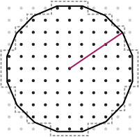

- AbrahamsonEtAl_2014 - Class in gov.usgs.earthquake.nshmp.gmm
-
Implementation of the Abrahamson, Silva & Kamai (2014) next generation ground
motion model for active crustal regions developed as part of
NGA West II.
- AbrahamsonSilva_1997 - Class in gov.usgs.earthquake.nshmp.gmm
-
Implementation of the Abrahamson & Silva (1997) ground motion model for
shallow earthquakes in active continental crust.
- abs(List<Double>) - Static method in class gov.usgs.earthquake.nshmp.data.Data
-
Set the elements of data to their absolute value in place.
- abs(double...) - Static method in class gov.usgs.earthquake.nshmp.data.Data
-
Set the elements of data to their absolute value in place.
- AbstractDiscretizedFunc - Class in gov.usgs.earthquake.nshmp.function
-
Title: DiscretizedFunc
- AbstractDiscretizedFunc() - Constructor for class gov.usgs.earthquake.nshmp.function.AbstractDiscretizedFunc
-
- AbstractXY_DataSet - Class in gov.usgs.earthquake.nshmp.function
-
- AbstractXY_DataSet() - Constructor for class gov.usgs.earthquake.nshmp.function.AbstractXY_DataSet
-
- add(EqRate) - Method in class gov.usgs.earthquake.nshmp.calc.EqRateExport
-
Add an EqRate to this exporter.
- add(Hazard, Optional<Deaggregation>) - Method in class gov.usgs.earthquake.nshmp.calc.HazardExport
-
Add a Hazard and optional Deaggregation result to this handler.
- add(HazardInput) - Method in class gov.usgs.earthquake.nshmp.calc.InputList
-
- add(double, List<Double>) - Static method in class gov.usgs.earthquake.nshmp.data.Data
-
Add a term to the elements of data in place.
- add(double, double...) - Static method in class gov.usgs.earthquake.nshmp.data.Data
-
Add a term to the elements of data in place.
- add(double, double[][]) - Static method in class gov.usgs.earthquake.nshmp.data.Data
-
Add a term to the elements of data in place.
- add(double, double[][][]) - Static method in class gov.usgs.earthquake.nshmp.data.Data
-
Add a term to the elements of data in place.
- add(List<Double>, List<Double>) - Static method in class gov.usgs.earthquake.nshmp.data.Data
-
Add the values of data2 to data1 in place.
- add(double[], double[]) - Static method in class gov.usgs.earthquake.nshmp.data.Data
-
Add the values of data2 to data1 in place.
- add(double[][], double[][]) - Static method in class gov.usgs.earthquake.nshmp.data.Data
-
Add the values of data2 to data1 in place.
- add(double[][][], double[][][]) - Static method in class gov.usgs.earthquake.nshmp.data.Data
-
Add the values of data2 to data1 in place.
- add(Map<T, Double>, Map<T, Double>) - Static method in class gov.usgs.earthquake.nshmp.data.Data
-
Adds the entries of map2 to map1 in place.
- add(double, double) - Method in class gov.usgs.earthquake.nshmp.data.IntervalArray.Builder
-
Add to the existing value at the specified row.
- add(int, double) - Method in class gov.usgs.earthquake.nshmp.data.IntervalArray.Builder
-
Add to the existing value at the specified row.
- add(double[]) - Method in class gov.usgs.earthquake.nshmp.data.IntervalArray.Builder
-
Add to the array being built.
- add(List<Double>) - Method in class gov.usgs.earthquake.nshmp.data.IntervalArray.Builder
-
Add to the array being built.
- add(XySequence) - Method in class gov.usgs.earthquake.nshmp.data.IntervalArray.Builder
-
Add the y-values of the supplied sequence to the array being built.
- add(double, double[]) - Method in class gov.usgs.earthquake.nshmp.data.IntervalArray.Builder
-
Add to the array being built starting at the specified row.
- add(double, List<Double>) - Method in class gov.usgs.earthquake.nshmp.data.IntervalArray.Builder
-
Add to the array being built starting at the specified row.
- add(IntervalArray) - Method in class gov.usgs.earthquake.nshmp.data.IntervalArray.Builder
-
Add the values in the supplied array to this builder.
- add(double, double, double) - Method in class gov.usgs.earthquake.nshmp.data.IntervalTable.Builder
-
Add to the existing value at the specified row and column.
- add(int, int, double) - Method in class gov.usgs.earthquake.nshmp.data.IntervalTable.Builder
-
Add to the existing value at the specified row and column indices.
- add(double, double[]) - Method in class gov.usgs.earthquake.nshmp.data.IntervalTable.Builder
-
Add to the values in the specified row.
- add(double, List<Double>) - Method in class gov.usgs.earthquake.nshmp.data.IntervalTable.Builder
-
Add to the values in the specified row.
- add(double, XySequence) - Method in class gov.usgs.earthquake.nshmp.data.IntervalTable.Builder
-
Add the y-values of the supplied sequence to the values in the specified
row.
- add(double, double, double[]) - Method in class gov.usgs.earthquake.nshmp.data.IntervalTable.Builder
-
Add to the values in the specified row starting at the specified column.
- add(double, double, List<Double>) - Method in class gov.usgs.earthquake.nshmp.data.IntervalTable.Builder
-
Add to the values in the specified row starting at the specified column.
- add(IntervalTable) - Method in class gov.usgs.earthquake.nshmp.data.IntervalTable.Builder
-
Add the values in the supplied table to this builder.
- add(double, double, double, double) - Method in class gov.usgs.earthquake.nshmp.data.IntervalVolume.Builder
-
Add to the existing value at the specified row, column, and level.
- add(int, int, int, double) - Method in class gov.usgs.earthquake.nshmp.data.IntervalVolume.Builder
-
Add to the existing value at the specified row, column, and level
indices.
- add(IntervalVolume) - Method in class gov.usgs.earthquake.nshmp.data.IntervalVolume.Builder
-
Add the values in the supplied volume to this builder.
- add(double) - Method in class gov.usgs.earthquake.nshmp.data.XySequence
-
Add a term to the y-values of this sequence in place.
- add(double[]) - Method in class gov.usgs.earthquake.nshmp.data.XySequence
-
Add the supplied y-values to the y-values of this sequence in place.
- add(XySequence) - Method in class gov.usgs.earthquake.nshmp.data.XySequence
-
Add the y-values of a sequence to the y-values of this sequence in place.
- add(double, double) - Method in class gov.usgs.earthquake.nshmp.function.EvenlyDiscretizedFunc
-
This method can be used for generating histograms if tolerance is set
greater than delta.
- add(int, double) - Method in class gov.usgs.earthquake.nshmp.function.EvenlyDiscretizedFunc
-
This method can be used for generating histograms if tolerance is set
greater than delta.
- add(Point2D) - Method in class gov.usgs.earthquake.nshmp.function.Point2DToleranceSortedArrayList
-
- add(Point2D) - Method in interface gov.usgs.earthquake.nshmp.function.Point2DToleranceSortedList
-
- add(Location) - Method in class gov.usgs.earthquake.nshmp.geo.LocationList.Builder
-
Add a Location to the LocationList.
- add(double, double) - Method in class gov.usgs.earthquake.nshmp.geo.LocationList.Builder
-
Add a new Location specified by the supplied latitude and
longitude and a depth of 0 km to the LocationList.
- add(double, double, double) - Method in class gov.usgs.earthquake.nshmp.geo.LocationList.Builder
-
Add a new Location specified by the supplied latitude, longitude,
and depth to the LocationList.
- add(Location...) - Method in class gov.usgs.earthquake.nshmp.geo.LocationList.Builder
-
Add each Location in locs to the LocationList .
- addAll(Collection<EqRate>) - Method in class gov.usgs.earthquake.nshmp.calc.EqRateExport
-
Add the supplied EqRates to this exporter.
- addAll(Collection<? extends Point2D>) - Method in class gov.usgs.earthquake.nshmp.function.Point2DToleranceSortedArrayList
-
- addAll(Collection<? extends Point2D>) - Method in interface gov.usgs.earthquake.nshmp.function.Point2DToleranceSortedList
-
- addAll(Iterable<Location>) - Method in class gov.usgs.earthquake.nshmp.geo.LocationList.Builder
-
Add each Location in locs to the LocationList .
- addBitset(BitSet) - Method in class gov.usgs.earthquake.nshmp.calc.SystemInputList
-
- addEach(XySequence) - Method in class gov.usgs.earthquake.nshmp.data.IntervalArray.Builder
-
Add each value-pair of the supplied sequence to the appropriate interval.
- addInterior(Region) - Method in class gov.usgs.earthquake.nshmp.geo.GriddedRegion
-
Overridden to throw an UnsupportedOperationException when called.
- addInterior(Region) - Method in class gov.usgs.earthquake.nshmp.geo.Region
-
Adds an interior (donut-hole) to this Region.
- addToMap(E, Map<E, XySequence>) - Method in class gov.usgs.earthquake.nshmp.data.XySequence
-
Adds this sequence to any exisiting sequence for key in the
supplied map.
- ANCHOR_0_0 - Static variable in class gov.usgs.earthquake.nshmp.geo.GriddedRegion
-
Convenience reference for an anchor at (0°, 0°).
- angle(Location, Location) - Static method in class gov.usgs.earthquake.nshmp.geo.Locations
-
Calculates the angle between two
Locations using the
Haversine formula.
- annualRate() - Method in enum gov.usgs.earthquake.nshmp.calc.ReturnPeriod
-
Return the annual rate of occurrence represented by this time period.
- annualRateToProbabilityConverter() - Static method in class gov.usgs.earthquake.nshmp.mfd.Mfds
-
Return a converter between annual rate and Poisson probability over a
1-year time span.
- annualRateToProbabilityConverter(double) - Static method in class gov.usgs.earthquake.nshmp.mfd.Mfds
-
Return a converter between annual rate and Poisson probability over the
specified time span.
- appendTo(Element) - Method in class gov.usgs.earthquake.nshmp.eq.model.MagUncertainty
-
Appends the XML form of this magnitude uncertainty data to the supplied
Element.
- ApproxGriddedSurface - Class in gov.usgs.earthquake.nshmp.eq.fault.surface
-
A GriddedSurface defined by an upper and lower trace whose spacing is
scaled to the be as close to a desired target spacing as possible over the
entire surface.
- ApproxGriddedSurface(LocationList, LocationList, double) - Constructor for class gov.usgs.earthquake.nshmp.eq.fault.surface.ApproxGriddedSurface
-
This constructor takes an upper and lower fault trace, re-samples these
according the the given aveGridSpacing to represent the first and last rows
of the surface, and then fills in the intermediate rows by evenly sampling
a straight line between the top and bottom point of each column.
- ArbitrarilyDiscretizedFunc - Class in gov.usgs.earthquake.nshmp.function
-
Title: ArbitrarilyDiscretizedFunc
- ArbitrarilyDiscretizedFunc(AbstractDiscretizedFunc) - Constructor for class gov.usgs.earthquake.nshmp.function.ArbitrarilyDiscretizedFunc
-
Creates an ArbitrarilyDiscretizedFunc from an DiscretizedFunc
- ArbitrarilyDiscretizedFunc(Point2DComparator) - Constructor for class gov.usgs.earthquake.nshmp.function.ArbitrarilyDiscretizedFunc
-
Constructor that takes a Point2D Comparator.
- ArbitrarilyDiscretizedFunc() - Constructor for class gov.usgs.earthquake.nshmp.function.ArbitrarilyDiscretizedFunc
-
No-Arg Constructor that uses the default DataPoint2DToleranceComparator
comparator.
- ArbitrarilyDiscretizedFunc(String) - Constructor for class gov.usgs.earthquake.nshmp.function.ArbitrarilyDiscretizedFunc
-
Creates a default arbitrarily discretized function with the given name
- ArbitrarilyDiscretizedFunc(Point2DToleranceSortedList) - Constructor for class gov.usgs.earthquake.nshmp.function.ArbitrarilyDiscretizedFunc
-
- area() - Method in interface gov.usgs.earthquake.nshmp.eq.fault.surface.RuptureSurface
-
The surface area of this surface in km2.
- area() - Method in class gov.usgs.earthquake.nshmp.geo.Region
-
Returns a deep copy of the internal
Area used to manage this
Region.
- areaForIndex(int) - Method in class gov.usgs.earthquake.nshmp.geo.GriddedRegion
-
Returns the Region that bounds a node
- areAllXValuesInteger(double) - Method in class gov.usgs.earthquake.nshmp.function.AbstractXY_DataSet
-
It finds out whether the X values are within tolerance of an integer value
- areAllXValuesInteger(double) - Method in class gov.usgs.earthquake.nshmp.function.EvenlyDiscretizedFunc
-
It finds out whether the X values are within tolerance of an integer value
- areAllXValuesInteger(double) - Method in interface gov.usgs.earthquake.nshmp.function.XY_DataSet
-
It finds out whether the X values are within tolerance of an integer value
- AreaSource - Class in gov.usgs.earthquake.nshmp.eq.model
-
Area source representation.
- AreaSource.GridScaling - Enum in gov.usgs.earthquake.nshmp.eq.model
-
Point source discretization scaling.
- AreaSourceSet - Class in gov.usgs.earthquake.nshmp.eq.model
-
- areSimilar(Location, Location) - Static method in class gov.usgs.earthquake.nshmp.geo.Locations
-
Returns true if the supplied Locations are very, very close
to one another.
- aseis(double) - Method in class gov.usgs.earthquake.nshmp.eq.fault.surface.DefaultGriddedSurface.Builder
-
- atIml(Hazard, double) - Static method in class gov.usgs.earthquake.nshmp.calc.Deaggregation
-
Deaggregate hazard at the supplied intensity measure level.
- Atkinson_2008p - Class in gov.usgs.earthquake.nshmp.gmm
-
Modified form of the relationship for the Central and Eastern US by Atkinson
(2008).
- Atkinson_2010 - Class in gov.usgs.earthquake.nshmp.gmm
-
Implementation of the ground motion model by Atkinson (2010) for shallow and
deep earthquake in Hawaii.
- Atkinson_2015 - Class in gov.usgs.earthquake.nshmp.gmm
-
Implementation of the ground motion model by Atkinson (2015) for induced
seismicity.
- AtkinsonBoore_2003 - Class in gov.usgs.earthquake.nshmp.gmm
-
Abstract implementation of the subduction ground motion model by Atkinson &
Boore (2003).
- AtkinsonBoore_2006 - Class in gov.usgs.earthquake.nshmp.gmm
-
Abstract implementation of the ground motion model for stable continental
regions by Atkinson & Boore (2006).
- AtkinsonBoore_2006p - Class in gov.usgs.earthquake.nshmp.gmm
-
Modified form of the relationship for the Central and Eastern US by Atkinson
& Boore (2006).
- AtkinsonMacias_2009 - Class in gov.usgs.earthquake.nshmp.gmm
-
Implementation of the subduction interface ground motion model by Atkinson &
Macias (2009).
- atReturnPeriod(Hazard, double) - Static method in class gov.usgs.earthquake.nshmp.calc.Deaggregation
-
Deaggregate hazard at the intensity measure level corresponding to
the supplied returnPeriod.
- azimuth(Location, Location) - Static method in class gov.usgs.earthquake.nshmp.geo.Locations
-
Computes the initial azimuth (bearing) when moving from one
Location to another in degrees.
- azimuth() - Method in class gov.usgs.earthquake.nshmp.geo.LocationVector
-
Returns the azimuth of this vector in radians.
- azimuthDegrees() - Method in class gov.usgs.earthquake.nshmp.geo.LocationVector
-
Returns the azimuth of this vector in decimal degrees.
- azimuthRad(Location, Location) - Static method in class gov.usgs.earthquake.nshmp.geo.Locations
-
Computes the initial azimuth (bearing) when moving from one
Location to another.
- BcHydro_2012 - Class in gov.usgs.earthquake.nshmp.gmm
-
Abstract implementation of the subduction ground motion model created for BC
Hydro, Canada, by Addo, Abrahamson, & Youngs (2012).
- binarySearch(Point2D) - Method in class gov.usgs.earthquake.nshmp.function.Point2DToleranceSortedArrayList
-
- binarySearch(Point2D) - Method in interface gov.usgs.earthquake.nshmp.function.Point2DToleranceSortedList
-
- bins - Variable in class gov.usgs.earthquake.nshmp.calc.CalcConfig.Deagg
-
The distance, magnitude, and epsilon bins into which contributing sources
to hazard are sorted.
- bins - Variable in class gov.usgs.earthquake.nshmp.calc.CalcConfig.Rate
-
The magnitude discretization.
- bisect(Location, Location, Location) - Static method in class gov.usgs.earthquake.nshmp.geo.Locations
-
Method returns a unit LocationVector that bisects the angle defined
by the line segments p2p1
and p2p3.
- bitsToIndices(BitSet) - Static method in class gov.usgs.earthquake.nshmp.data.Indexing
-
Return an index array corresponding to the 'set' bits of the supplied
BitSet.
- BooreAtkinson_2008 - Class in gov.usgs.earthquake.nshmp.gmm
-
Implementation of the Boore & Atkinson (2008) next generation attenuation
relationship for active crustal regions developed as part of
NGA West I.
- BooreEtAl_1997 - Class in gov.usgs.earthquake.nshmp.gmm
-
Implementation of the Boore, Joyner & Fumal (1997) ground motion model for
shallow earthquakes in active continental crust.
- BooreEtAl_2014 - Class in gov.usgs.earthquake.nshmp.gmm
-
Implementation of the Boore, Stewart, Seyhan, & Atkinson (2014) next
generation ground motion model for active crustal regions developed as part
of
NGA West II.
- border() - Method in class gov.usgs.earthquake.nshmp.eq.model.AreaSource
-
Return the border of this AreaSource.
- border() - Method in class gov.usgs.earthquake.nshmp.geo.Region
-
Returns a reference to the internal, immutable LocationList of
points that decribe the border of this Region.
- BorderType - Enum in gov.usgs.earthquake.nshmp.geo
-
A BorderType specifies how lines connecting two points on the earth's
surface should be represented.
- Bounds - Class in gov.usgs.earthquake.nshmp.geo
-
A rectangular (in Mercator projection) bounding box specified by a lower-left
coordinate (
Bounds.min()) and an upper-right coordinate (
Bounds.max()).
- bounds() - Method in class gov.usgs.earthquake.nshmp.geo.LocationGrid
-
Lazily compute the bounds of the Locations in this grid.
- bounds() - Method in class gov.usgs.earthquake.nshmp.geo.LocationList
-
Lazily compute the bounds of the Locations in this list.
- bounds(Iterable<Location>) - Static method in class gov.usgs.earthquake.nshmp.geo.Locations
-
Compute the
Bounds of the supplied iterable.
- bounds() - Method in class gov.usgs.earthquake.nshmp.geo.Region
-
Lazily create the bounds of this region.
- build() - Method in class gov.usgs.earthquake.nshmp.calc.CalcConfig.Builder
-
Build a new calculation configuration.
- build() - Method in class gov.usgs.earthquake.nshmp.calc.Site.Builder
-
Build the Site.
- build() - Method in class gov.usgs.earthquake.nshmp.data.DataArray.Builder
-
Return a newly created DataArray.
- build() - Method in class gov.usgs.earthquake.nshmp.data.Interpolator.Builder
-
Return a newly created Interpolator.
- build(IntervalArray.Loader) - Method in class gov.usgs.earthquake.nshmp.data.IntervalArray.Builder
-
Return a newly-created, immutable, 2-dimensional data container populated
with values computed by the supplied loader.
- build() - Method in class gov.usgs.earthquake.nshmp.data.IntervalArray.Builder
-
Return a newly-created, immutable, interval data array populated with the
contents of this Builder.
- build(IntervalTable.Loader) - Method in class gov.usgs.earthquake.nshmp.data.IntervalTable.Builder
-
Return a newly-created, immutable, 2-dimensional data container populated
with values computed by the supplied loader.
- build() - Method in class gov.usgs.earthquake.nshmp.data.IntervalTable.Builder
-
Return a newly-created, immutable, 2-dimensional data container populated
with the contents of this Builder.
- build(IntervalVolume.Loader) - Method in class gov.usgs.earthquake.nshmp.data.IntervalVolume.Builder
-
Return a newly-created, immutable, 3-dimensional interval data container
populated with values computed by the supplied loader.
- build() - Method in class gov.usgs.earthquake.nshmp.data.IntervalVolume.Builder
-
Return a newly-created, immutable 3-dimensional interval data container
populated with the contents of this Builder.
- build() - Method in class gov.usgs.earthquake.nshmp.eq.fault.surface.DefaultGriddedSurface.Builder
-
- build() - Method in class gov.usgs.earthquake.nshmp.geo.LocationGrid.Builder
-
Return a newly created LocationGrid.
- build() - Method in class gov.usgs.earthquake.nshmp.geo.LocationList.Builder
-
Return a newly created LocationList.
- build() - Method in class gov.usgs.earthquake.nshmp.gmm.GmmInput.Builder
-
- buildCleanSequence(double, double, double, boolean, int) - Static method in class gov.usgs.earthquake.nshmp.data.Data
-
Creates a sequence of evenly spaced values starting at min and
ending at max.
- builder() - Static method in class gov.usgs.earthquake.nshmp.calc.Site
-
- builder(int) - Static method in class gov.usgs.earthquake.nshmp.data.DataArray
-
Return a new single-use DataArray builder with a backing array
initialized to size.
- builder() - Static method in class gov.usgs.earthquake.nshmp.data.Interpolator
-
- Builder() - Constructor for class gov.usgs.earthquake.nshmp.data.IntervalArray.Builder
-
Create a new builder.
- Builder() - Constructor for class gov.usgs.earthquake.nshmp.data.IntervalTable.Builder
-
Create a new builder.
- Builder() - Constructor for class gov.usgs.earthquake.nshmp.data.IntervalVolume.Builder
-
Create a new builder.
- builder() - Static method in class gov.usgs.earthquake.nshmp.eq.fault.surface.DefaultGriddedSurface
-
Return a new surface builder.
- builder(int, int) - Static method in class gov.usgs.earthquake.nshmp.geo.LocationGrid
-
Return a new builder.
- builder() - Static method in class gov.usgs.earthquake.nshmp.geo.LocationList
-
Return a new LocationList builder.
- builder() - Static method in class gov.usgs.earthquake.nshmp.gmm.GmmInput
-
Return a GmmInput builder that requires all fields to be
explicitely set.
- buildSequence(double, double, double, boolean) - Static method in class gov.usgs.earthquake.nshmp.data.Data
-
Creates a sequence of evenly spaced values starting at min and
ending at max.
- C - Static variable in class gov.usgs.earthquake.nshmp.function.AbstractDiscretizedFunc
-
Class name used for debbuging
- calc(Hazard, double) - Static method in class gov.usgs.earthquake.nshmp.DeaggCalc
-
Deaggregate probabilistic seismic hazard at the supplied return period (in
years).
- calc(GmmInput) - Method in class gov.usgs.earthquake.nshmp.gmm.AbrahamsonEtAl_2014
-
- calc(GmmInput) - Method in class gov.usgs.earthquake.nshmp.gmm.AbrahamsonSilva_1997
-
- calc(GmmInput) - Method in class gov.usgs.earthquake.nshmp.gmm.Atkinson_2008p
-
- calc(GmmInput) - Method in class gov.usgs.earthquake.nshmp.gmm.Atkinson_2010
-
- calc(GmmInput) - Method in class gov.usgs.earthquake.nshmp.gmm.Atkinson_2015
-
- calc(GmmInput) - Method in class gov.usgs.earthquake.nshmp.gmm.AtkinsonBoore_2003
-
- calc(GmmInput) - Method in class gov.usgs.earthquake.nshmp.gmm.AtkinsonBoore_2006
-
- calc(GmmInput) - Method in class gov.usgs.earthquake.nshmp.gmm.AtkinsonBoore_2006p
-
- calc(GmmInput) - Method in class gov.usgs.earthquake.nshmp.gmm.AtkinsonMacias_2009
-
- calc(GmmInput) - Method in class gov.usgs.earthquake.nshmp.gmm.BcHydro_2012
-
- calc(GmmInput) - Method in class gov.usgs.earthquake.nshmp.gmm.BooreAtkinson_2008
-
- calc(GmmInput) - Method in class gov.usgs.earthquake.nshmp.gmm.BooreEtAl_1997
-
- calc(GmmInput) - Method in class gov.usgs.earthquake.nshmp.gmm.BooreEtAl_2014
-
- calc(GmmInput) - Method in class gov.usgs.earthquake.nshmp.gmm.Campbell_1997
-
- calc(GmmInput) - Method in class gov.usgs.earthquake.nshmp.gmm.Campbell_2003
-
- calc(GmmInput) - Method in class gov.usgs.earthquake.nshmp.gmm.CampbellBozorgnia_2003
-
- calc(GmmInput) - Method in class gov.usgs.earthquake.nshmp.gmm.CampbellBozorgnia_2008
-
- calc(GmmInput) - Method in class gov.usgs.earthquake.nshmp.gmm.CampbellBozorgnia_2014
-
- calc(GmmInput) - Method in class gov.usgs.earthquake.nshmp.gmm.ChiouYoungs_2008
-
- calc(GmmInput) - Method in class gov.usgs.earthquake.nshmp.gmm.ChiouYoungs_2014
-
- calc(GmmInput) - Method in class gov.usgs.earthquake.nshmp.gmm.FrankelEtAl_1996
-
- calc(GmmInput) - Method in class gov.usgs.earthquake.nshmp.gmm.GraizerKalkan_2015
-
- calc(GmmInput) - Method in interface gov.usgs.earthquake.nshmp.gmm.GroundMotionModel
-
Compute the scalar ground motion and its standard deviation for the
supplied arguments.
- calc(GmmInput) - Method in class gov.usgs.earthquake.nshmp.gmm.Idriss_2014
-
- calc(GmmInput) - Method in class gov.usgs.earthquake.nshmp.gmm.McVerryEtAl_2000
-
- calc(GmmInput) - Method in class gov.usgs.earthquake.nshmp.gmm.MunsonThurber_1997
-
- calc(GmmInput) - Method in class gov.usgs.earthquake.nshmp.gmm.PezeshkEtAl_2011
-
- calc(GmmInput) - Method in class gov.usgs.earthquake.nshmp.gmm.SadighEtAl_1997
-
- calc(GmmInput) - Method in class gov.usgs.earthquake.nshmp.gmm.SilvaEtAl_2002
-
- calc(GmmInput) - Method in class gov.usgs.earthquake.nshmp.gmm.SomervilleEtAl_2001
-
- calc(GmmInput) - Method in class gov.usgs.earthquake.nshmp.gmm.TavakoliPezeshk_2005
-
- calc(GmmInput) - Method in class gov.usgs.earthquake.nshmp.gmm.ToroEtAl_1997
-
- calc(GmmInput) - Method in class gov.usgs.earthquake.nshmp.gmm.WongEtAl_2015
-
- calc(GmmInput) - Method in class gov.usgs.earthquake.nshmp.gmm.YoungsEtAl_1997
-
- calc(GmmInput) - Method in class gov.usgs.earthquake.nshmp.gmm.ZhaoEtAl_2006
-
- calc(GmmInput) - Method in class gov.usgs.earthquake.nshmp.gmm.ZhaoEtAl_2016
-
- calc(HazardModel, CalcConfig, Site, Optional<Executor>) - Static method in class gov.usgs.earthquake.nshmp.HazardCalc
-
Compute hazard curves at a site for a model and
config.
- calc(HazardModel, CalcConfig, Site) - Static method in class gov.usgs.earthquake.nshmp.RateCalc
-
Compute earthquake rates at a site for a model and
config.
- CalcConfig - Class in gov.usgs.earthquake.nshmp.calc
-
Calculation configuration.
- CalcConfig.Builder - Class in gov.usgs.earthquake.nshmp.calc
-
A builder of configuration instances.
- CalcConfig.Deagg - Class in gov.usgs.earthquake.nshmp.calc
-
Deaggregation configuration.
- CalcConfig.Deagg.Bins - Class in gov.usgs.earthquake.nshmp.calc
-
The distance, magnitude, and epsilon bins into which contributing sources
to hazard will be sorted.
- CalcConfig.Hazard - Class in gov.usgs.earthquake.nshmp.calc
-
Hazard calculation configuration.
- CalcConfig.Output - Class in gov.usgs.earthquake.nshmp.calc
-
Data and file output settings.
- CalcConfig.Performance - Class in gov.usgs.earthquake.nshmp.calc
-
Performance and optimization settings.
- CalcConfig.Rate - Class in gov.usgs.earthquake.nshmp.calc
-
Magnitude-frequency distribution configuration.
- CalcConfig.Rate.Bins - Class in gov.usgs.earthquake.nshmp.calc
-
The mfd magnitude discretization.
- CalcConfig.SiteDefaults - Class in gov.usgs.earthquake.nshmp.calc
-
Default site settings.
- calcSumOfY_Vals() - Method in class gov.usgs.earthquake.nshmp.function.AbstractDiscretizedFunc
-
- callable(HazardModel, CalcConfig, Site) - Static method in class gov.usgs.earthquake.nshmp.calc.EqRate
-
- Campbell_1997 - Class in gov.usgs.earthquake.nshmp.gmm
-
Implementation of the Campbell (1997) ground motion model for worldwide
earthquakes in active tectonic regions.
- Campbell_2003 - Class in gov.usgs.earthquake.nshmp.gmm
-
Implementation of the hybrid ground motion model for stable continental
regions by Campbell (2003).
- CampbellBozorgnia_2003 - Class in gov.usgs.earthquake.nshmp.gmm
-
Implementation of the Campbell & Bozorgnia (2003) ground motion model for
shallow earthquakes in active continental crust.
- CampbellBozorgnia_2008 - Class in gov.usgs.earthquake.nshmp.gmm
-
Implementation of the Campbell & Bozorgnia (2008) next generation attenuation
for active crustal regions relationship developed as part of
NGA West I.
- CampbellBozorgnia_2014 - Class in gov.usgs.earthquake.nshmp.gmm
-
Implementation of the Campbell & Bozorgnia (2014) next generation ground
motion model for active crustal regions developed as part of
NGA West II.
- centroid() - Method in class gov.usgs.earthquake.nshmp.eq.fault.surface.ApproxGriddedSurface
-
- centroid() - Method in class gov.usgs.earthquake.nshmp.eq.fault.surface.DefaultGriddedSurface
-
- centroid() - Method in interface gov.usgs.earthquake.nshmp.eq.fault.surface.RuptureSurface
-
The centroid of this surface.
- centroid(Iterable<Location>) - Static method in class gov.usgs.earthquake.nshmp.geo.Locations
-
Computes a centroid for a group of Locations as the average of
latitude, longitude, and depth;
- checkCrustalDepth(double) - Static method in class gov.usgs.earthquake.nshmp.eq.Earthquakes
-
Ensure 0 ≤ depth ≤ 40 km.
- checkCrustalWidth(double) - Static method in class gov.usgs.earthquake.nshmp.eq.Earthquakes
-
Ensure 0 ≤ width ≤ 60 km.
- checkDelta(double, double, double) - Static method in class gov.usgs.earthquake.nshmp.data.Data
-
Ensure validity of sequence discretization parameters.
- checkDepth(double) - Static method in class gov.usgs.earthquake.nshmp.eq.Earthquakes
-
Ensure -5 ≤ depth ≤ 700 km.
- checkDip(double) - Static method in class gov.usgs.earthquake.nshmp.eq.fault.Faults
-
Ensure 0° ≤ dip ≤ 90°.
- checkFinite(String, double) - Static method in class gov.usgs.earthquake.nshmp.data.Data
-
Ensure value is finite.
- checkFinite(Collection<Double>) - Static method in class gov.usgs.earthquake.nshmp.data.Data
-
Ensure the elements of data are finite.
- checkFinite(double...) - Static method in class gov.usgs.earthquake.nshmp.data.Data
-
Ensure the elements of data are finite.
- checkInRange(Range<Double>, String, double) - Static method in class gov.usgs.earthquake.nshmp.data.Data
-
Ensure
value falls within the specified
Range.
- checkInRange(Range<Double>, Collection<Double>) - Static method in class gov.usgs.earthquake.nshmp.data.Data
-
Ensure the elements of
data fall within the specified
Range
.
- checkInRange(Range<Double>, double...) - Static method in class gov.usgs.earthquake.nshmp.data.Data
-
Ensure the elements of
data fall within the specified
Range
.
- checkInterfaceDepth(double) - Static method in class gov.usgs.earthquake.nshmp.eq.Earthquakes
-
Ensure 0 ≤ depth ≤ 60 km.
- checkInterfaceWidth(double) - Static method in class gov.usgs.earthquake.nshmp.eq.Earthquakes
-
Ensure 0 ≤ width ≤ 200 km.
- checkLatitude(double) - Static method in class gov.usgs.earthquake.nshmp.geo.Coordinates
-
Ensure that -90° ≤ latitude ≤ 90°.
- checkLongitude(double) - Static method in class gov.usgs.earthquake.nshmp.geo.Coordinates
-
Ensure that -360° < longitude < 360°.
- checkMagnitude(double) - Static method in class gov.usgs.earthquake.nshmp.eq.Earthquakes
-
Ensure -2.0 ≤ magnitude ≤ 9.7.
- checkRake(double) - Static method in class gov.usgs.earthquake.nshmp.eq.fault.Faults
-
Ensure -180° ≤ rake ≤ 180°.
- checkSize(int, Collection<Double>) - Static method in class gov.usgs.earthquake.nshmp.data.Data
-
Ensure data.size() ≥ min.
- checkSize(int, double[]) - Static method in class gov.usgs.earthquake.nshmp.data.Data
-
Ensure data.length ≥ min.
- checkSizes(Collection<Double>, Collection<Double>) - Static method in class gov.usgs.earthquake.nshmp.data.Data
-
Ensure the supplied datasets are the same size.
- checkSizes(double[], double[]) - Static method in class gov.usgs.earthquake.nshmp.data.Data
-
Ensure the supplied datasets are the same size.
- checkSizes(double[][], double[][]) - Static method in class gov.usgs.earthquake.nshmp.data.Data
-
Ensure the 1st dimensions of the supplied datasets are the same
size.
- checkSizes(double[][][], double[][][]) - Static method in class gov.usgs.earthquake.nshmp.data.Data
-
Ensure the 1st dimensions of the supplied datasets are the same
size.
- checkSlabDepth(double) - Static method in class gov.usgs.earthquake.nshmp.eq.Earthquakes
-
Ensure 20 ≤ depth ≤ 700 km.
- checkStrike(double) - Static method in class gov.usgs.earthquake.nshmp.eq.fault.Faults
-
Ensure 0° ≤ strike < 360°.
- checkTrace(LocationList) - Static method in class gov.usgs.earthquake.nshmp.eq.fault.Faults
-
Ensure trace contains at least two points.
- checkWeight(double) - Static method in class gov.usgs.earthquake.nshmp.data.Data
-
Ensure 0.0 < weight ≤ 1.0.
- checkWeights(Collection<Double>) - Static method in class gov.usgs.earthquake.nshmp.data.Data
-
Ensure each 0.0 ≤ weight ≤ 1.0 and
sum(weights) = 1.0 ± 0.0001.
- ChiouYoungs_2008 - Class in gov.usgs.earthquake.nshmp.gmm
-
Implementation of the Chiou & Youngs (2008) next generation attenuation
relationship for active crustal regions developed as part of
NGA West I.
- ChiouYoungs_2014 - Class in gov.usgs.earthquake.nshmp.gmm
-
Implementation of the Chiou & Youngs (2014) next generation attenuation
relationship for active crustal regions developed as part of
NGA West II.
- clear() - Method in class gov.usgs.earthquake.nshmp.data.XySequence
-
Sets all y-values to 0.
- clear() - Method in interface gov.usgs.earthquake.nshmp.eq.fault.surface.Container2D
-
Deprecated.
Empties the list of all data.
- clear() - Method in class gov.usgs.earthquake.nshmp.function.ArbitrarilyDiscretizedFunc
-
Clear all the X and Y values from this function
- clear() - Method in class gov.usgs.earthquake.nshmp.function.EvenlyDiscretizedFunc
-
Sets all y values to NaN
- clear() - Method in class gov.usgs.earthquake.nshmp.function.Point2DToleranceSortedArrayList
-
- clear() - Method in interface gov.usgs.earthquake.nshmp.function.Point2DToleranceSortedList
-
- closestPoint(Location, LocationList) - Static method in class gov.usgs.earthquake.nshmp.geo.Locations
-
Return the point in a LocationList that is that closest to the
supplied Location.
- ClusterSource - Class in gov.usgs.earthquake.nshmp.eq.model
-
Cluster source representation.
- ClusterSourceSet - Class in gov.usgs.earthquake.nshmp.eq.model
-
- collapse(double[][]) - Static method in class gov.usgs.earthquake.nshmp.data.Data
-
Sum the arrays in the 2nd dimension of data into a new 1-D array.
- collapse(double[][][]) - Static method in class gov.usgs.earthquake.nshmp.data.Data
-
Sum the arrays in the 3rd dimension of data into the 2nd dimension
of a new 2-D array.
- collapse() - Method in interface gov.usgs.earthquake.nshmp.data.IntervalTable
-
Return a new IntervalArray created by summing the columns of this
table.
- collapse() - Method in interface gov.usgs.earthquake.nshmp.data.IntervalVolume
-
Return a new IntervalTable created by summing the levels of this
volume.
- collapseMfds - Variable in class gov.usgs.earthquake.nshmp.calc.CalcConfig.Performance
-
Whether to collapse/combine magnitude-frequency distributions, or not.
- column(double, double) - Method in interface gov.usgs.earthquake.nshmp.data.IntervalVolume
-
Return an immutable view of the values that map to the supplied row and
column values.
- column(int, int) - Method in interface gov.usgs.earthquake.nshmp.data.IntervalVolume
-
Return an immutable view of the values that map to the supplied row and
column values.
- column(int) - Method in class gov.usgs.earthquake.nshmp.geo.LocationGrid
-
Return the column at index.
- columnIndex(double) - Method in class gov.usgs.earthquake.nshmp.data.IntervalTable.Builder
-
Return the index of the column that would contain the supplied value.
- columnIndex(double) - Method in class gov.usgs.earthquake.nshmp.data.IntervalVolume.Builder
-
Return the index of the column that would contain the supplied value.
- columnMax() - Method in interface gov.usgs.earthquake.nshmp.data.IntervalTable
-
Return the upper edge of the uppermost column bin.
- columnMax() - Method in interface gov.usgs.earthquake.nshmp.data.IntervalVolume
-
Return the upper edge of the uppermost column bin.
- columnMin() - Method in interface gov.usgs.earthquake.nshmp.data.IntervalTable
-
Return the lower edge of the lowermost column bin.
- columnMin() - Method in interface gov.usgs.earthquake.nshmp.data.IntervalVolume
-
Return the lower edge of the lowermost column bin.
- columns(double, double, double) - Method in class gov.usgs.earthquake.nshmp.data.IntervalTable.Builder
-
Define the table column intervals.
- columns() - Method in interface gov.usgs.earthquake.nshmp.data.IntervalTable
-
Return an immutable list view of the column keys (bin centers).
- columns(double, double, double) - Method in class gov.usgs.earthquake.nshmp.data.IntervalVolume.Builder
-
Define the data volume columns.
- columns() - Method in interface gov.usgs.earthquake.nshmp.data.IntervalVolume
-
Return an immutable list view of the column keys (bin centers).
- columns() - Method in class gov.usgs.earthquake.nshmp.geo.LocationGrid
-
Return the number of columns in this grid.
- columnΔ() - Method in interface gov.usgs.earthquake.nshmp.data.IntervalTable
-
Return the column bin discretization.
- columnΔ() - Method in interface gov.usgs.earthquake.nshmp.data.IntervalVolume
-
Return the column bin discretization.
- combine(EqRate...) - Static method in class gov.usgs.earthquake.nshmp.calc.EqRate
-
Create a new earthquake rate container with the sum of the supplied
rates.
- combine(Iterable<XySequence>) - Static method in class gov.usgs.earthquake.nshmp.data.Data
-
Deprecated.
- combine(IncrementalMfd...) - Static method in class gov.usgs.earthquake.nshmp.mfd.Mfds
-
Deprecated.
- compare(Point2D, Point2D) - Method in class gov.usgs.earthquake.nshmp.function.Point2DToleranceComparator
-
Returns 0 if the two Objects are equal, -1 if the first object is less than
the second, or +1 if it's greater.
- compareTo(SourceSet<PointSource>) - Method in class gov.usgs.earthquake.nshmp.eq.model.SlabSourceSet
-
- compareTo(Location) - Method in class gov.usgs.earthquake.nshmp.geo.Location
-
Compare this Location to another and sort first by latitude, then
by longitude.
- complement() - Method in class gov.usgs.earthquake.nshmp.data.XySequence
-
Sets the y-values of this sequence to their complement in place [
1 - y].
- compute(double) - Method in interface gov.usgs.earthquake.nshmp.data.IntervalArray.Loader
-
Compute the value corresponding to the supplied row key (bin center).
- compute(double, double) - Method in interface gov.usgs.earthquake.nshmp.data.IntervalTable.Loader
-
Compute the value corresponding to the supplied row and column keys (bin
centers).
- compute(double, double, double) - Method in interface gov.usgs.earthquake.nshmp.data.IntervalVolume.Loader
-
Compute the value corresponding to the supplied row, column, and level
keys.
- compute(GriddedSurface, Location) - Static method in class gov.usgs.earthquake.nshmp.eq.model.Distance
-
Compute distance metrics: rJB, rRup, and rX.
- config() - Method in class gov.usgs.earthquake.nshmp.calc.Hazard
-
The original configuration used to generate this result.
- config() - Method in class gov.usgs.earthquake.nshmp.eq.model.HazardModel
-
Return the default calculation configuration.
- constraints() - Method in enum gov.usgs.earthquake.nshmp.gmm.Gmm
-
Return the input Constraints for this Gmm.
- Container2D<T> - Interface in gov.usgs.earthquake.nshmp.eq.fault.surface
-
Deprecated.
- contains(Location) - Method in class gov.usgs.earthquake.nshmp.geo.Region
-
Returns whether the given Location is inside this Region.
- contains(Region) - Method in class gov.usgs.earthquake.nshmp.geo.Region
-
Tests whether another Region is entirely contained within this
Region.
- contributorLimit - Variable in class gov.usgs.earthquake.nshmp.calc.CalcConfig.Deagg
-
The minimum contribution (in %) that a source must make to hazard to be
included on the contributor source list in deaggregation result.
- convert(double) - Method in enum gov.usgs.earthquake.nshmp.gmm.MagConverter
-
Converts supplied magnitude value.
- converter() - Method in class gov.usgs.earthquake.nshmp.gmm.AtkinsonBoore_2006
-
- converter() - Method in class gov.usgs.earthquake.nshmp.gmm.Campbell_2003
-
- converter() - Method in interface gov.usgs.earthquake.nshmp.gmm.ConvertsMag
-
Returns a magnitude scale converter.
- converter() - Method in class gov.usgs.earthquake.nshmp.gmm.FrankelEtAl_1996
-
- converter() - Method in class gov.usgs.earthquake.nshmp.gmm.SilvaEtAl_2002
-
- converter() - Method in class gov.usgs.earthquake.nshmp.gmm.TavakoliPezeshk_2005
-
- ConvertsMag - Interface in gov.usgs.earthquake.nshmp.gmm
-
Implemented by ground motion models (GMMs) that perform a magnitude
conversion prior to using the value.
- Coordinates - Class in gov.usgs.earthquake.nshmp.geo
-
Constants and utility methods pertaining to geographic coordinates.
- Coordinates() - Constructor for class gov.usgs.earthquake.nshmp.geo.Coordinates
-
- copyOf(CalcConfig) - Static method in class gov.usgs.earthquake.nshmp.calc.CalcConfig.Builder
-
Initialize a new builder with values copied from the supplied config.
- copyOf(double[][]) - Static method in class gov.usgs.earthquake.nshmp.data.Data
-
Create a deep copy of a two-dimensional data array.
- copyOf(double[][][]) - Static method in class gov.usgs.earthquake.nshmp.data.Data
-
Create a deep copy of a three-dimensional data array.
- copyOf(double...) - Static method in class gov.usgs.earthquake.nshmp.data.DataArray
-
Create a new DataArray, making a defensive copy of the supplied
data.
- copyOf(IntervalArray) - Static method in class gov.usgs.earthquake.nshmp.data.IntervalArray.Builder
-
Create a new builder with the structure and content identical to that of
the supplied array.
- copyOf(IntervalTable) - Static method in class gov.usgs.earthquake.nshmp.data.IntervalTable.Builder
-
Create a new builder with the structure and content identical to that of
the supplied table.
- copyOf(IntervalVolume) - Static method in class gov.usgs.earthquake.nshmp.data.IntervalVolume.Builder
-
Create a new builder with the structure and content identical to that of
the supplied volume.
- copyOf(XySequence) - Static method in class gov.usgs.earthquake.nshmp.data.XySequence
-
Create a mutable copy of the supplied sequence.
- copyOf(Region) - Static method in class gov.usgs.earthquake.nshmp.geo.Regions
-
Creates an exact copy of a Region.
- copyOf(GriddedRegion) - Static method in class gov.usgs.earthquake.nshmp.geo.Regions
-
Creates a copy of a GriddedRegion.
- copyOf(IncrementalMfd) - Static method in class gov.usgs.earthquake.nshmp.mfd.IncrementalMfd
-
- create(HazardModel, CalcConfig, Site) - Static method in class gov.usgs.earthquake.nshmp.calc.EqRate
-
Create a new earthquake rate data container.
- create(CalcConfig, Sites, Logger) - Static method in class gov.usgs.earthquake.nshmp.calc.EqRateExport
-
Create a new results handler.
- create(CalcConfig, Sites, Logger) - Static method in class gov.usgs.earthquake.nshmp.calc.HazardExport
-
Create a new results handler.
- create(double[], double[]) - Static method in class gov.usgs.earthquake.nshmp.data.XySequence
-
Create a new sequence with mutable y-values from the supplied value arrays.
- create(Collection<? extends Number>, Collection<? extends Number>) - Static method in class gov.usgs.earthquake.nshmp.data.XySequence
-
Create a new sequence with mutable y-values from the supplied value
collections.
- create(LocationList, double, double, double) - Method in class gov.usgs.earthquake.nshmp.eq.fault.surface.DefaultGriddedSurface
-
Deprecated.
- create(double[], double[], double, double, int, boolean, double) - Static method in class gov.usgs.earthquake.nshmp.eq.model.MagUncertainty
-
Factory magnitude uncertainty container constructor.
- create(double, double, double, RuptureSurface) - Static method in class gov.usgs.earthquake.nshmp.eq.model.Rupture
-
- create(double, double) - Static method in class gov.usgs.earthquake.nshmp.geo.Location
-
Create a new Location with the supplied latitude and longitude and
a depth of 0 km.
- create(double, double, double) - Static method in class gov.usgs.earthquake.nshmp.geo.Location
-
Create a new Location with the supplied latitude, longitude, and
depth.
- create(Location...) - Static method in class gov.usgs.earthquake.nshmp.geo.LocationList
-
Create a new LocationList containing all Locations in
locs.
- create(Iterable<Location>) - Static method in class gov.usgs.earthquake.nshmp.geo.LocationList
-
Create a new LocationList containing all Locations in
locs.
- create(double, double, double) - Static method in class gov.usgs.earthquake.nshmp.geo.LocationVector
-
Initializes a new LocationVector with the supplied values.
- create(Location, Location) - Static method in class gov.usgs.earthquake.nshmp.geo.LocationVector
-
Returns the LocationVector describing the move from one
Location to another.
- create(String, LocationList, BorderType) - Static method in class gov.usgs.earthquake.nshmp.geo.Regions
-
Creates a Region from a list of border locations.
- create(double, double) - Static method in class gov.usgs.earthquake.nshmp.gmm.DefaultScalarGroundMotion
-
Create a new ground motion container.
- createBuffered(String, LocationList, double) - Static method in class gov.usgs.earthquake.nshmp.geo.Regions
-

Creates a
Region
as a buffered area around a line.
- createCircular(String, Location, double) - Static method in class gov.usgs.earthquake.nshmp.geo.Regions
-
Creates a circular
Region.
- createFloatingRuptures(GriddedSurface, RuptureScaling, double, double, double, boolean) - Method in enum gov.usgs.earthquake.nshmp.eq.fault.surface.RuptureFloating
-
Create a List of floating ruptures
- createGridded(String, LocationList, BorderType, double, double, Location) - Static method in class gov.usgs.earthquake.nshmp.geo.Regions
-

Creates a
GriddedRegion from a list of border locations.
- createImmutable(double[], double[]) - Static method in class gov.usgs.earthquake.nshmp.data.XySequence
-
Create a new, immutable sequence from the supplied value arrays.
- createImmutable(Collection<? extends Number>, Collection<? extends Number>) - Static method in class gov.usgs.earthquake.nshmp.data.XySequence
-
Create a new, immutable sequence from the supplied value collections.
- createRectangular(String, Location, Location) - Static method in class gov.usgs.earthquake.nshmp.geo.Regions
-
Creates a Region from a pair of Location s.
- createRectangularGridded(String, Location, Location, double, double, Location) - Static method in class gov.usgs.earthquake.nshmp.geo.Regions
-
Creates a GriddedRegion from a pair of Location s.
- createWithPlunge(double, double, double) - Static method in class gov.usgs.earthquake.nshmp.geo.LocationVector
-
Creates a new LocationVector with horizontal and vertical
components derived from the supplied plunge and length.
- CRUSTAL_DEPTH_RANGE - Static variable in class gov.usgs.earthquake.nshmp.eq.Earthquakes
-
Supported crustal earthquake depths: [0..40] km.
- CRUSTAL_WIDTH_RANGE - Static variable in class gov.usgs.earthquake.nshmp.eq.Earthquakes
-
Supported crustal earthquake widths: [0..60] km.
- curves() - Method in class gov.usgs.earthquake.nshmp.calc.Hazard
-
The total mean hazard curves for each calculated Imt.
- curvesByGmm(Hazard) - Static method in class gov.usgs.earthquake.nshmp.calc.HazardExport
-
Derive maps of curves by Gmm for each Imt in a
Hazard result.
- curvesBySource(Hazard) - Static method in class gov.usgs.earthquake.nshmp.calc.HazardExport
-
Derive maps of curves by SourceType for each Imt.
- D - Static variable in class gov.usgs.earthquake.nshmp.function.AbstractDiscretizedFunc
-
if true print out debugging statements
- Data - Class in gov.usgs.earthquake.nshmp.data
-
Utilities for operating on double-valued data.
- DataArray - Class in gov.usgs.earthquake.nshmp.data
-
An immutable array of double values.
- DataArray() - Constructor for class gov.usgs.earthquake.nshmp.data.DataArray
-
- DataArray.Builder - Class in gov.usgs.earthquake.nshmp.data
-
A single-use DataArray builder.
- DataType - Enum in gov.usgs.earthquake.nshmp.calc
-
Data type identifiers.
- dataTypes - Variable in class gov.usgs.earthquake.nshmp.calc.CalcConfig.Output
-
The different
types of data to save.
- deagg - Variable in class gov.usgs.earthquake.nshmp.calc.CalcConfig
-
Deaggregation configuration.
- DeaggCalc - Class in gov.usgs.earthquake.nshmp
-
Deaggregate probabilisitic seismic hazard.
- DeaggCalc() - Constructor for class gov.usgs.earthquake.nshmp.DeaggCalc
-
- Deaggregation - Class in gov.usgs.earthquake.nshmp.calc
-
Hazard deaggregation.
- deaggregation(Hazard, double) - Static method in class gov.usgs.earthquake.nshmp.calc.HazardCalcs
-
Perform a deaggregation of probabilisitic seismic hazard.
- decimalToProbabilityConverter(int) - Static method in class gov.usgs.earthquake.nshmp.util.Maths
-
Return a converter between decimal values and percentages.
- decreasingX() - Method in class gov.usgs.earthquake.nshmp.data.Interpolator.Builder
-
Indicate if the x-values to be interpolated are decreasing.
- deepClone() - Method in class gov.usgs.earthquake.nshmp.function.ArbitrarilyDiscretizedFunc
-
This function returns a new copy of this list, including copies of all the
points.
- deepClone() - Method in interface gov.usgs.earthquake.nshmp.function.DiscretizedFunc
-
- deepClone() - Method in class gov.usgs.earthquake.nshmp.function.EvenlyDiscretizedFunc
-
Returns a copy of this and all points in this DiscretizedFunction.
- deepClone() - Method in interface gov.usgs.earthquake.nshmp.function.XY_DataSet
-
This function returns a new copy of this list, including copies of all the
points.
- DefaultGriddedSurface - Class in gov.usgs.earthquake.nshmp.eq.fault.surface
-
- DefaultGriddedSurface.Builder - Class in gov.usgs.earthquake.nshmp.eq.fault.surface
-
- defaultInfo - Variable in class gov.usgs.earthquake.nshmp.mfd.IncrementalMfd
-
- defaultName - Variable in class gov.usgs.earthquake.nshmp.mfd.IncrementalMfd
-
- defaults() - Static method in class gov.usgs.earthquake.nshmp.gmm.GmmInput.Constraints
-
The default allowed values for each input field.
- DefaultScalarGroundMotion - Class in gov.usgs.earthquake.nshmp.gmm
-
Default wrapper for ground motion prediction equation (GMPE) results.
- defaultValue - Variable in enum gov.usgs.earthquake.nshmp.gmm.GmmInput.Field
-
- degreesLatPerKm(Location) - Static method in class gov.usgs.earthquake.nshmp.geo.Coordinates
-
Return a conversion factor for the number of degrees of latitude per km at
a given location.
- degreesLonPerKm(Location) - Static method in class gov.usgs.earthquake.nshmp.geo.Coordinates
-
Return a conversion factor for the number of degrees of longitude per km at
a given location.
- delta - Variable in class gov.usgs.earthquake.nshmp.function.EvenlyDiscretizedFunc
-
Distance between x points
- depth() - Method in class gov.usgs.earthquake.nshmp.eq.fault.surface.ApproxGriddedSurface
-
- depth(double) - Method in class gov.usgs.earthquake.nshmp.eq.fault.surface.DefaultGriddedSurface.Builder
-
- depth() - Method in class gov.usgs.earthquake.nshmp.eq.fault.surface.DefaultGriddedSurface
-
- depth() - Method in interface gov.usgs.earthquake.nshmp.eq.fault.surface.RuptureSurface
-
The average depth to the top of this surface in km (always positive)
- depth() - Method in class gov.usgs.earthquake.nshmp.geo.Location
-
Returns the depth of this Location in km.
- depth() - Method in class gov.usgs.earthquake.nshmp.geo.LocationList
-
Lazily compute the average depth of the Locations in this list.
- DEPTH_RANGE - Static variable in class gov.usgs.earthquake.nshmp.eq.Earthquakes
-
Supported earthquake depths: [-5..700] km.
- diff(double...) - Static method in class gov.usgs.earthquake.nshmp.data.Data
-
Build an array of the differences between the adjacent elements of
data.
- dimensions(double, double) - Method in enum gov.usgs.earthquake.nshmp.eq.fault.surface.RuptureScaling
-
Return the dimensions of a magnitude-dependent and width-constrained
rupture.
- dimensionsDistribution(double, double) - Method in enum gov.usgs.earthquake.nshmp.eq.fault.surface.RuptureScaling
-
Return a ±2σ distribution of Dimensions and associated weights.
- dip() - Method in enum gov.usgs.earthquake.nshmp.eq.fault.FocalMech
-
Returns a 'standard' dip value for this mechanism.
- dip() - Method in class gov.usgs.earthquake.nshmp.eq.fault.surface.ApproxGriddedSurface
-
- dip(double) - Method in class gov.usgs.earthquake.nshmp.eq.fault.surface.DefaultGriddedSurface.Builder
-
- dip() - Method in class gov.usgs.earthquake.nshmp.eq.fault.surface.DefaultGriddedSurface
-
- dip() - Method in interface gov.usgs.earthquake.nshmp.eq.fault.surface.RuptureSurface
-
The average dip of this surface in degrees [0°, 90°].
- dip(double) - Method in class gov.usgs.earthquake.nshmp.gmm.GmmInput.Builder
-
- dip - Variable in class gov.usgs.earthquake.nshmp.gmm.GmmInput
-
Rupture dip.
- DIP_RANGE - Static variable in class gov.usgs.earthquake.nshmp.eq.fault.Faults
-
Supported fault dips: [0..90]°.
- dipDir(double) - Method in class gov.usgs.earthquake.nshmp.eq.fault.surface.DefaultGriddedSurface.Builder
-
- dipDirection(LocationList) - Static method in class gov.usgs.earthquake.nshmp.eq.fault.Faults
-
Returns the dip direction for the supplied line/trace assuming the
right-hand rule (strike + 90°).
- dipDirection(Location, Location) - Static method in class gov.usgs.earthquake.nshmp.eq.fault.Faults
-
- dipDirection(double) - Static method in class gov.usgs.earthquake.nshmp.eq.fault.Faults
-
- dipDirection() - Method in class gov.usgs.earthquake.nshmp.eq.fault.surface.ApproxGriddedSurface
-
- dipDirection() - Method in class gov.usgs.earthquake.nshmp.eq.fault.surface.DefaultGriddedSurface
-
- dipDirection() - Method in interface gov.usgs.earthquake.nshmp.eq.fault.surface.RuptureSurface
-
The average dip direction of this surface in degrees [0°, 360°).
- dipDirectionRad(LocationList) - Static method in class gov.usgs.earthquake.nshmp.eq.fault.Faults
-
- dipDirectionRad(Location, Location) - Static method in class gov.usgs.earthquake.nshmp.eq.fault.Faults
-
- dipDirectionRad(double) - Static method in class gov.usgs.earthquake.nshmp.eq.fault.Faults
-
- dipRad() - Method in class gov.usgs.earthquake.nshmp.eq.fault.surface.ApproxGriddedSurface
-
- dipRad() - Method in class gov.usgs.earthquake.nshmp.eq.fault.surface.DefaultGriddedSurface
-
- dipRad() - Method in interface gov.usgs.earthquake.nshmp.eq.fault.surface.RuptureSurface
-
The average dip of this surface in radians [0, π/2].
- directory - Variable in class gov.usgs.earthquake.nshmp.calc.CalcConfig.Output
-
The directory to write any results to.
- DiscretizedFunc - Interface in gov.usgs.earthquake.nshmp.function
-
Title: DiscretizedFuncAPI
- distance(double) - Method in class gov.usgs.earthquake.nshmp.calc.CalcConfig.Builder
-
Set the cutoff distance within which to include all sources when
computing earthquake rates or probabilities.
- distance - Variable in class gov.usgs.earthquake.nshmp.calc.CalcConfig.Rate
-
The distance from a site within which all sources should be included.
- Distance - Class in gov.usgs.earthquake.nshmp.eq.model
-
Distance value wrapper.
- Distance.Type - Enum in gov.usgs.earthquake.nshmp.eq.model
-
- distanceAndRectangleFilter(Location, double) - Static method in class gov.usgs.earthquake.nshmp.geo.Locations
-
- distanceFilter(Location, double) - Method in class gov.usgs.earthquake.nshmp.eq.model.AreaSourceSet
-
- distanceFilter(Location, double) - Method in class gov.usgs.earthquake.nshmp.eq.model.ClusterSourceSet
-
- distanceFilter(Location, double) - Method in class gov.usgs.earthquake.nshmp.eq.model.FaultSourceSet
-
- distanceFilter(Location, double) - Method in class gov.usgs.earthquake.nshmp.eq.model.GridSourceSet
-
- distanceFilter(Location, double) - Method in class gov.usgs.earthquake.nshmp.eq.model.InterfaceSourceSet
-
- distanceFilter(Location, double) - Method in class gov.usgs.earthquake.nshmp.eq.model.SlabSourceSet
-
- distanceFilter(Location, double) - Method in interface gov.usgs.earthquake.nshmp.eq.model.SourceSet
-
Return a
Predicate that evaluates to
true if this source is
within
distance of the supplied
Location.
- distanceFilter(Location, double) - Method in class gov.usgs.earthquake.nshmp.eq.model.SystemSourceSet
-
- distanceFilter(Location, double) - Static method in class gov.usgs.earthquake.nshmp.geo.Locations
-
Return a radial distance Location filter.
- distances(double, double, double) - Method in class gov.usgs.earthquake.nshmp.gmm.GmmInput.Builder
-
- distances(Distance) - Method in class gov.usgs.earthquake.nshmp.gmm.GmmInput.Builder
-
- distanceTo(Location) - Method in interface gov.usgs.earthquake.nshmp.eq.fault.surface.RuptureSurface
-
Returns the distance metrics commonly required by PSHA ground motion models
(GMMs): rJB, rRup, and rX.
- distanceToLine(Location, Location, Location) - Static method in class gov.usgs.earthquake.nshmp.geo.Locations
-
Computes the shortest distance between a point and a line (great-circle).
- distanceToLineFast(Location, Location, Location) - Static method in class gov.usgs.earthquake.nshmp.geo.Locations
-
Computes the shortest distance between a point and a line.
- distanceToLocation(Location) - Method in class gov.usgs.earthquake.nshmp.geo.Region
-
Returns the minimum horizonatal distance (in km) between the border of this
Region and the Location specified.
- distanceToSegment(Location, Location, Location) - Static method in class gov.usgs.earthquake.nshmp.geo.Locations
-
Computes the shortest distance between a point and a line segment (i.e.
- distanceToSegmentFast(Location, Location, Location) - Static method in class gov.usgs.earthquake.nshmp.geo.Locations
-
Computes the shortest distance between a point and a line segment.
- distributionFormat - Variable in class gov.usgs.earthquake.nshmp.calc.CalcConfig.Rate
-
The rate data distribution type.
- DistributionFormat - Enum in gov.usgs.earthquake.nshmp.calc
-
Distribution format.
- divide(double[], double[]) - Static method in class gov.usgs.earthquake.nshmp.data.Data
-
Divide the elements of data1 by the elements of data2 in
place.
- divide(List<Double>, List<Double>) - Static method in class gov.usgs.earthquake.nshmp.data.Data
-
Divide the elements of data1 by the elements of data2 in
place.
- duration() - Method in enum gov.usgs.earthquake.nshmp.calc.ReturnPeriod
-
Return the duration (number of years spanned) by this return period.
- EARTH_RADIUS_EQUATORIAL - Static variable in class gov.usgs.earthquake.nshmp.geo.Coordinates
-
The equatorial radius of the earth as derived from the WGS-84 ellipsoid:
6378.1370 km.
- EARTH_RADIUS_MEAN - Static variable in class gov.usgs.earthquake.nshmp.geo.Coordinates
-
The Authalic mean radius (Ar) of the earth:
6371.0072 km.
- EARTH_RADIUS_POLAR - Static variable in class gov.usgs.earthquake.nshmp.geo.Coordinates
-
The polar radius of the earth as derived from the WGS-84 ellipsoid:
6356.7523 km].
- Earthquakes - Class in gov.usgs.earthquake.nshmp.eq
-
Constants and utility methods pertaining to properties of earthquakes.
- elapsedTime() - Method in class gov.usgs.earthquake.nshmp.calc.EqRateExport
-
A string representation of the time duration that this result handler has
been running.
- elapsedTime() - Method in class gov.usgs.earthquake.nshmp.calc.HazardExport
-
A string representation of the time duration that this result handler has
been running.
- empty(SystemSourceSet) - Static method in class gov.usgs.earthquake.nshmp.calc.SystemInputList
-
- emptyCopyOf(XySequence) - Static method in class gov.usgs.earthquake.nshmp.data.XySequence
-
Create a mutable copy of the supplied sequence with all y-values
reset to zero.
- epiUncertainty() - Method in class gov.usgs.earthquake.nshmp.eq.model.GmmSet
-
- epiValue(double, double) - Method in class gov.usgs.earthquake.nshmp.eq.model.GmmSet
-
- epiWeights() - Method in class gov.usgs.earthquake.nshmp.eq.model.GmmSet
-
- epsilon(double, double, double) - Static method in class gov.usgs.earthquake.nshmp.util.Maths
-
Standardized normal variate ε = (x - μ) / σ.
- EqRate - Class in gov.usgs.earthquake.nshmp.calc
-
General purpose earthquake rate and probability data container.
- EqRateExport - Class in gov.usgs.earthquake.nshmp.calc
-
Earthquake rate and probability exporter.
- equals(Object) - Method in class gov.usgs.earthquake.nshmp.eq.model.GmmSet
-
- equals(Object) - Method in class gov.usgs.earthquake.nshmp.function.AbstractDiscretizedFunc
-
Default equals for all Discretized Functions.
- equals(Object) - Method in class gov.usgs.earthquake.nshmp.geo.Bounds
-
- equals(Object) - Method in class gov.usgs.earthquake.nshmp.geo.GriddedRegion
-
- equals(Object) - Method in class gov.usgs.earthquake.nshmp.geo.Location
-
- equals(Object) - Method in class gov.usgs.earthquake.nshmp.geo.LocationList
-
- equals(Object) - Method in class gov.usgs.earthquake.nshmp.geo.Region
-
- equalsRegion(GriddedRegion) - Method in class gov.usgs.earthquake.nshmp.geo.GriddedRegion
-
Compares this GriddedRegion to another and returns true if
they are the same with respect to aerial extent (both exterior and interior
borders), grid node spacing, and location.
- equalsRegion(Region) - Method in class gov.usgs.earthquake.nshmp.geo.Region
-
Compares the geometry of this Region to another and returns
true if they are the same, ignoring any differences in name.
- equalXAndYValues(DiscretizedFunc) - Method in class gov.usgs.earthquake.nshmp.function.EvenlyDiscretizedFunc
-
Determines if two functions are the same by comparing that each point x
value is the same, within tolerance, and that each y value is the same,
including nulls.
- equalXValues(DiscretizedFunc) - Method in class gov.usgs.earthquake.nshmp.function.ArbitrarilyDiscretizedFunc
-
Determines if two functions are the same by comparing that each point x
value is the same.
- equalXValues(DiscretizedFunc) - Method in class gov.usgs.earthquake.nshmp.function.EvenlyDiscretizedFunc
-
Determines if two functions are the same by comparing that each point x
value is the same, within tolerance
- erf(double) - Static method in class gov.usgs.earthquake.nshmp.util.Maths
-
Error function approximation of Abramowitz and Stegun, formula 7.1.26 in
the Handbook of Mathematical Functions with Formulas, Graphs, and
Mathematical Tables.
- EvenlyDiscretizedFunc - Class in gov.usgs.earthquake.nshmp.function
-
Title: EvenlyDiscretizedFunc
- EvenlyDiscretizedFunc(double, int, double) - Constructor for class gov.usgs.earthquake.nshmp.function.EvenlyDiscretizedFunc
-
This is one of two constructor options to fully quantify the domain of this
list, i.e.
- EvenlyDiscretizedFunc(double, double, int) - Constructor for class gov.usgs.earthquake.nshmp.function.EvenlyDiscretizedFunc
-
The other three input options to fully quantify the domain of this list,
i.e.
- exceedanceModel - Variable in class gov.usgs.earthquake.nshmp.calc.CalcConfig.Hazard
-
The probability distribution model to use when computing hazard curves.
- ExceedanceModel - Enum in gov.usgs.earthquake.nshmp.calc
-
Uncertainty models govern how the values of a complementary cumulative normal
distribution (or probability of exceedence) are computed given a mean,
μ, standard deviation, σ, and other possibly relevant
arguments.
- exist(int, int) - Method in interface gov.usgs.earthquake.nshmp.eq.fault.surface.Container2D
-
Deprecated.
Check if this grid cell has a java object stored in it.
- exp(List<Double>) - Static method in class gov.usgs.earthquake.nshmp.data.Data
-
Raise Euler's number e to each of the elements of data in
place.
- exp(double...) - Static method in class gov.usgs.earthquake.nshmp.data.Data
-
Raise Euler's number e to each of the elements of data in
place.
- expire() - Method in class gov.usgs.earthquake.nshmp.calc.EqRateExport
-
Flushes any remaining results, stops all timers and sets the state of this
exporter to 'used'; no more results may be added.
- expire() - Method in class gov.usgs.earthquake.nshmp.calc.HazardExport
-
Calls
HazardExport.flush() a final time, stops all timers and sets the state of
this
Results instance to 'used'; no more results may be added.
- extend(CalcConfig.Builder) - Method in class gov.usgs.earthquake.nshmp.calc.CalcConfig.Builder
-
Extend this builder to match that builder.
- extent() - Method in class gov.usgs.earthquake.nshmp.geo.Region
-
Returns a flat-earth estimate of the area of this region in km2.
- Faults - Class in gov.usgs.earthquake.nshmp.eq.fault
-
Constants and utility methods pertaining to faults.
- faults() - Method in class gov.usgs.earthquake.nshmp.eq.model.ClusterSource
-
The FaultSourceSet of all FaultSources that participate in
this cluster.
- FaultSource - Class in gov.usgs.earthquake.nshmp.eq.model
-
Fault source representation.
- FaultSourceSet - Class in gov.usgs.earthquake.nshmp.eq.model
-
- FaultStyle - Enum in gov.usgs.earthquake.nshmp.gmm
-
Style-of-faulting identifier.
- fillColumn(int, LocationList) - Method in class gov.usgs.earthquake.nshmp.geo.LocationGrid.Builder
-
Fill a row with the specified Locations.
- fillRow(int, LocationList) - Method in class gov.usgs.earthquake.nshmp.geo.LocationGrid.Builder
-
Fill a row with the specified Locations.
- findLogLogY(double[], double[], double) - Static method in class gov.usgs.earthquake.nshmp.data.Interpolate
-
Deprecated.
Returns the log-log interpolated or extrapolated y-value using the supplied
x- and y-value arrays.
- findLogLogY(double[], double[], double[]) - Static method in class gov.usgs.earthquake.nshmp.data.Interpolate
-
Deprecated.
Returns the log-log interpolated or extrapolated y-values using the
supplied x- and y-value arrays.
- findLogY(double[], double[], double) - Static method in class gov.usgs.earthquake.nshmp.data.Interpolate
-
Deprecated.
Returns the log interpolated or extrapolated y-value using the supplied x-
and y-value arrays.
- findLogY(double[], double[], double[]) - Static method in class gov.usgs.earthquake.nshmp.data.Interpolate
-
Deprecated.
Returns the log interpolated or extrapolated y-values using the supplied x-
and y-value arrays.
- findMagJustAboveMomentRate(double) - Method in class gov.usgs.earthquake.nshmp.mfd.IncrementalMfd
-
This finds the smallest magnitude such that all those less than and equal
to this have a cumulative moment rate less than that passed in.
- findX(double, double, double, double, double) - Static method in class gov.usgs.earthquake.nshmp.data.Interpolate
-
Deprecated.
Returns the interpolated or extrapolated x-value corresponding to the
supplied y-value.
- findX(double, double, double, double, double) - Static method in class gov.usgs.earthquake.nshmp.data.Interpolator
-
Return an interpolated or extrapolated x-value corresponding to the
supplied y-value.
- findX(double[], double[], double) - Method in class gov.usgs.earthquake.nshmp.data.Interpolator
-
Return an interpolated x-value corresponding to the supplied y-value in the
supplied x- and y-value arrays.
- findX(List<Double>, List<Double>, double) - Method in class gov.usgs.earthquake.nshmp.data.Interpolator
-
Return an interpolated x-value corresponding to the supplied y-value in the
supplied x- and y-value arrays.
- findX(XySequence, double) - Method in class gov.usgs.earthquake.nshmp.data.Interpolator
-
Return an interpolated x-value corresponding to the supplied y-value in the
supplied xy-sequence.
- findY(double, double, double, double, double) - Static method in class gov.usgs.earthquake.nshmp.data.Interpolate
-
Deprecated.
Returns the interpolated or extrapolated y-value corresponding to the
supplied x-value.
- findY(double[], double[], double) - Static method in class gov.usgs.earthquake.nshmp.data.Interpolate
-
Deprecated.
Returns the interpolated or extrapolated y-value using the supplied x- and
y-value arrays.
- findY(List<Double>, List<Double>, double) - Static method in class gov.usgs.earthquake.nshmp.data.Interpolate
-
Deprecated.
- findY(double[], double[], double[]) - Static method in class gov.usgs.earthquake.nshmp.data.Interpolate
-
Deprecated.
Returns interpolated or extrapolated y-values using the supplied x- and
y-value arrays.
- findY(List<Double>, List<Double>, double[]) - Static method in class gov.usgs.earthquake.nshmp.data.Interpolate
-
Deprecated.
- findY(double, double, double, double, double) - Static method in class gov.usgs.earthquake.nshmp.data.Interpolator
-
Return an interpolated or extrapolated y-value corresponding to the
supplied x-value.
- findY(double[], double[], double) - Method in class gov.usgs.earthquake.nshmp.data.Interpolator
-
Return an interpolated or extrapolated y-value corresponding to the
supplied x-value in the supplied x- and y-value arrays.
- findY(List<Double>, List<Double>, double) - Method in class gov.usgs.earthquake.nshmp.data.Interpolator
-
Return an interpolated or extrapolated y-value corresponding to the
supplied x-value in the supplied x- and y-value arrays.
- findY(XySequence, double) - Method in class gov.usgs.earthquake.nshmp.data.Interpolator
-
Return an interpolated or extrapolated y-value corresponding to the
supplied x-value in the supplied xy-sequence.
- findY(double[], double[], double[]) - Method in class gov.usgs.earthquake.nshmp.data.Interpolator
-
Return interpolated or extrapolated y-values using the supplied x- and
y-value arrays.
- findY(List<Double>, List<Double>, double[]) - Method in class gov.usgs.earthquake.nshmp.data.Interpolator
-
Return interpolated or extrapolated y-values using the supplied x- and
y-value arrays.
- findY(XySequence, double[]) - Method in class gov.usgs.earthquake.nshmp.data.Interpolator
-
Return interpolated or extrapolated y-values using the supplied x- and
y-value arrays.
- finiteInputs(Site, SourceType, Location, XySequence, Map<FocalMech, Double>, RuptureScaling, NavigableMap<Double, Map<Double, Double>>, double) - Static method in class gov.usgs.earthquake.nshmp.eq.model.PointSources
-
Using the supplied Site and the standard data that is used to build
point sources, create and return an InputList.
- finiteInputs(List<Site>, SourceType, Location, XySequence, Map<FocalMech, Double>, RuptureScaling, NavigableMap<Double, Map<Double, Double>>, double) - Static method in class gov.usgs.earthquake.nshmp.eq.model.PointSources
-
Using the supplied Sites and the standard data that is used to
build point sources, create and return a List<InputList>.
- finiteInputs(List<Site>, SourceType, Location, XySequence, Map<FocalMech, Double>, GridSourceSet) - Static method in class gov.usgs.earthquake.nshmp.eq.model.PointSources
-
Using the supplied Sites and a GridSourceSet, from which the
standard data that is used to build point sources is derived, create and
return a List<InputList>.
- first - Variable in class gov.usgs.earthquake.nshmp.function.EvenlyDiscretizedFunc
-
Helper boolean that indicates no values have been put into this function
yet.
- first() - Method in class gov.usgs.earthquake.nshmp.geo.LocationList
-
Return the first Location in this list.
- firstColumn() - Method in class gov.usgs.earthquake.nshmp.geo.LocationGrid
-
Return the first column.
- firstRow() - Method in class gov.usgs.earthquake.nshmp.geo.LocationGrid
-
Return the first row.
- flip(List<Double>) - Static method in class gov.usgs.earthquake.nshmp.data.Data
-
Flip the sign of the elements of data in place.
- flip(double...) - Static method in class gov.usgs.earthquake.nshmp.data.Data
-
Flip the sign of the elements of data in place.
- floats() - Method in class gov.usgs.earthquake.nshmp.mfd.IncrementalMfd
-
Returns whether ruptures generated using this MFD should float.
- flush() - Method in class gov.usgs.earthquake.nshmp.calc.HazardExport
-
Flush any stored Hazard and Deaggregation results to file, clearing
- flushLimit - Variable in class gov.usgs.earthquake.nshmp.calc.CalcConfig.Output
-
The number of results (one per Site) to store before writing to
file(s).
- FocalMech - Enum in gov.usgs.earthquake.nshmp.eq.fault
-
Generalized identifier for different focal mechanism types.
- FrankelEtAl_1996 - Class in gov.usgs.earthquake.nshmp.gmm
-
Implementation of the Frankel et al.
- frequency() - Method in enum gov.usgs.earthquake.nshmp.gmm.Imt
-
Returns the frequency (in Hz) for this Imt.
- fromCsv(Path, CalcConfig) - Static method in class gov.usgs.earthquake.nshmp.calc.Sites
-
Create an unmodifiable Iterable<Site> from the comma-delimted site
file designated by path.
- fromFile(Path) - Static method in class gov.usgs.earthquake.nshmp.calc.CalcConfig.Builder
-
Create a new builder from the resource at the specified path.
- fromJson(Path, CalcConfig) - Static method in class gov.usgs.earthquake.nshmp.calc.Sites
-
Create an unmodifiable Iterable<Site> from the GeoJSON site file
designated by path.
- fromModel(IntervalArray) - Static method in class gov.usgs.earthquake.nshmp.data.IntervalArray.Builder
-
Create a new builder with a structure identical to that of the supplied
model.
- fromModel(IntervalTable) - Static method in class gov.usgs.earthquake.nshmp.data.IntervalTable.Builder
-
Create a new builder with a structure identical to that of the supplied
model.
- fromModel(IntervalVolume) - Static method in class gov.usgs.earthquake.nshmp.data.IntervalVolume.Builder
-
Create a new builder with a structure identical to that of the supplied
model.
- fromPeriod(double) - Static method in enum gov.usgs.earthquake.nshmp.gmm.Imt
-
Returns the spectral acceleration Imt associated with the supplied
period.
- fromString(String, CalcConfig) - Static method in class gov.usgs.earthquake.nshmp.calc.Sites
-
Create an unmodifiable singleton Iterable<Site> from the supplied
string.
- fromString(String) - Static method in enum gov.usgs.earthquake.nshmp.eq.model.SourceType
-
Converts supplied String to equivalent SourceType.
- fromString(String) - Static method in class gov.usgs.earthquake.nshmp.geo.Location
-
Generate a new Location by parsing the supplied String.
- fromString(String) - Static method in class gov.usgs.earthquake.nshmp.geo.LocationList
-
Create a new LocationList from the supplied String.
- fromString(String) - Static method in enum gov.usgs.earthquake.nshmp.gmm.GmmAttribute
-
Converts supplied String to the equivalent GmmAttribute.
- fromString(String) - Static method in enum gov.usgs.earthquake.nshmp.gmm.GmmElement
-
Converts supplied String to equivalent GmmElement.
- fromString(String) - Static method in enum gov.usgs.earthquake.nshmp.gmm.GmmInput.Field
-
- fromValue(double) - Static method in enum gov.usgs.earthquake.nshmp.calc.Vs30
-
Create a Vs30 constant from a Vs30 value.
- get(int) - Method in class gov.usgs.earthquake.nshmp.calc.InputList
-
- get(int) - Method in class gov.usgs.earthquake.nshmp.data.DataArray
-
- get(double) - Method in interface gov.usgs.earthquake.nshmp.data.IntervalArray
-
Return the value of the bin that maps to the supplied row value.
- get(int) - Method in interface gov.usgs.earthquake.nshmp.data.IntervalArray
-
Return the value of the bin that maps to the supplied row index.
- get(double, double) - Method in interface gov.usgs.earthquake.nshmp.data.IntervalTable
-
Return the value of the bin that maps to the supplied row and column
values.
- get(int, int) - Method in interface gov.usgs.earthquake.nshmp.data.IntervalTable
-
Return the value of the bin that maps to the supplied row and column
indices.
- get(double, double, double) - Method in interface gov.usgs.earthquake.nshmp.data.IntervalVolume
-
Return the value of the bin that maps to the supplied row, column, and
level values.
- get(int, int, int) - Method in interface gov.usgs.earthquake.nshmp.data.IntervalVolume
-
Return the value of the bin that maps to the supplied row, column, and
level indices.
- get(int, int) - Method in interface gov.usgs.earthquake.nshmp.eq.fault.surface.Container2D
-
Deprecated.
Returns the object stored in this two dimensional grid cell.
- get(int) - Method in class gov.usgs.earthquake.nshmp.function.ArbitrarilyDiscretizedFunc
-
Returns the nth (x,y) point in the Function, else null if this index point
doesn't exist
- get(int) - Method in class gov.usgs.earthquake.nshmp.function.EvenlyDiscretizedFunc
-
Returns an x and y value in a Point2D based on index into the y-points
array.
- get(int) - Method in class gov.usgs.earthquake.nshmp.function.Point2DToleranceSortedArrayList
-
- get(double) - Method in class gov.usgs.earthquake.nshmp.function.Point2DToleranceSortedArrayList
-
- get(int) - Method in interface gov.usgs.earthquake.nshmp.function.Point2DToleranceSortedList
-
- get(double) - Method in interface gov.usgs.earthquake.nshmp.function.Point2DToleranceSortedList
-
- get(int) - Method in interface gov.usgs.earthquake.nshmp.function.XY_DataSet
-
Returns the nth (x,y) point in the Function by index, or null if no such
point exists
- get(int) - Method in class gov.usgs.earthquake.nshmp.geo.LocationList
-
Return the location at index.
- get(GmmInput.Field) - Method in class gov.usgs.earthquake.nshmp.gmm.GmmInput.Constraints
-
- getAllByColumnsIterator() - Method in interface gov.usgs.earthquake.nshmp.eq.fault.surface.Container2D
-
Deprecated.
This returns an iterator of all the Java objects stored in this two
dimensional matrix iterating over all rows within a column and then moving
to the next column until iteration has been done over all rows and all
columns.
- getAllByRowsIterator() - Method in interface gov.usgs.earthquake.nshmp.eq.fault.surface.Container2D
-
Deprecated.
This returns an iterator of all the Java objects stored in this two
dimensional matrix iterating over all columns within a rows and then moving
to the next column until iteration has been done over all columns and all
rows.
- getAngleAverage(List<Double>) - Static method in class gov.usgs.earthquake.nshmp.eq.fault.Faults
-
Averages angles dealing with any -180/180 or 0/360 cut issues.
- getAveGridSpacing() - Method in interface gov.usgs.earthquake.nshmp.eq.fault.surface.GriddedSurface
-
This returns the average grid spacing used to define the discretization
used in what's returned by the methods here that contain "Discretized" in
their names.
- getAvgHW_CB(double, double, double) - Static method in class gov.usgs.earthquake.nshmp.gmm.GmmUtils
-
Returns the average hanging-wall factor appropriate for
CampbellBozorgnia_2008 for a dipping point source at the supplied
distance and magnitude and period of interest.
- getAvgHW_CY(double, double, double) - Static method in class gov.usgs.earthquake.nshmp.gmm.GmmUtils
-
Returns the average hanging-wall factor appropriate for
ChiouYoungs_2008 for a dipping point source at the supplied
distance and magnitude and period of interest.
- getClosestX(double) - Method in class gov.usgs.earthquake.nshmp.function.AbstractXY_DataSet
-
- getClosestX(double) - Method in interface gov.usgs.earthquake.nshmp.function.XY_DataSet
-
Get the X value for the point with closest Y
- getClosestXIndex(double) - Method in class gov.usgs.earthquake.nshmp.function.EvenlyDiscretizedFunc
-
Returns the index of the supplied value (ignoring tolerance).
- getClosestY(double) - Method in class gov.usgs.earthquake.nshmp.function.AbstractXY_DataSet
-
- getClosestY(double) - Method in class gov.usgs.earthquake.nshmp.function.EvenlyDiscretizedFunc
-
- getClosestY(double) - Method in interface gov.usgs.earthquake.nshmp.function.XY_DataSet
-
Get the Y value for the point with closest X
- getColumnIterator(int) - Method in interface gov.usgs.earthquake.nshmp.eq.fault.surface.Container2D
-
Deprecated.
Returns an ordered list iterator over all columns associated with one row.
- getComparator() - Method in class gov.usgs.earthquake.nshmp.function.Point2DToleranceSortedArrayList
-
- getComparator() - Method in interface gov.usgs.earthquake.nshmp.function.Point2DToleranceSortedList
-
- getCumMomentRateDist() - Method in class gov.usgs.earthquake.nshmp.mfd.IncrementalMfd
-
This returns the object of the class EvenlyDiscretizedFunc which contains
cumulative Moment Rate (the total moment rate for all points greater than
and equal to each mag)
- getCumRate(double) - Method in class gov.usgs.earthquake.nshmp.mfd.IncrementalMfd
-
This function finds the cumulative Rate at a specified magnitude (the rate
greater than and equal to that mag)
- getCumRate(int) - Method in class gov.usgs.earthquake.nshmp.mfd.IncrementalMfd
-
This function finds the cumulative Rate at a specified index (the rate
greater than and equal to that index)
- getCumRateDist() - Method in class gov.usgs.earthquake.nshmp.mfd.IncrementalMfd
-
This returns the object of the class EvenlyDiscretizedFunc which contains
all the points with Cum Rate Distribution (the rate greater than and equal
to each magnitude)
- getCumRateDistWithOffset() - Method in class gov.usgs.earthquake.nshmp.mfd.IncrementalMfd
-
This returns the object of the class EvenlyDiscretizedFunc which contains
all the points with Cum Rate Distribution (the rate greater than and equal
to each magnitude).
- getDefaultInfo() - Method in class gov.usgs.earthquake.nshmp.mfd.IncrementalMfd
-
Returns the default Info String for the Distribution
- getDefaultName() - Method in class gov.usgs.earthquake.nshmp.mfd.IncrementalMfd
-
Returns the default Name for the Distribution
- getDelta() - Method in class gov.usgs.earthquake.nshmp.function.EvenlyDiscretizedFunc
-
Returns the spacing between x-values
- getEqualLengthSubsectionTraces(LocationList, double) - Static method in class gov.usgs.earthquake.nshmp.eq.fault.Faults
-
This subdivides the given fault trace into sub-traces that have the length
as given (or less).
- getEqualLengthSubsectionTraces(LocationList, double, int) - Static method in class gov.usgs.earthquake.nshmp.eq.fault.Faults
-
This subdivides the given fault trace into sub-traces that have the length
as given (or less).
- getEvenlyDiscritizedListOfLocsOnSurface() - Method in interface gov.usgs.earthquake.nshmp.eq.fault.surface.GriddedSurface
-
This returns a list of locations that are evenly spread (at least
approximately) over the rupture surface, with a spacing given by what's
returned by the getGridSpacing() method.
- getEvenlyDiscritizedLowerEdge() - Method in interface gov.usgs.earthquake.nshmp.eq.fault.surface.GriddedSurface
-
This returns a list of locations that are evenly spread along the lower
edge of the surface.
- getEvenlyDiscritizedPerimeter() - Method in interface gov.usgs.earthquake.nshmp.eq.fault.surface.GriddedSurface
-
Deprecated.
- getEvenlyDiscritizedUpperEdge() - Method in interface gov.usgs.earthquake.nshmp.eq.fault.surface.GriddedSurface
-
This returns a list of locations that are evenly spread along the upper
edge of the surface.
- getFirstInterpolatedX(double) - Method in class gov.usgs.earthquake.nshmp.function.ArbitrarilyDiscretizedFunc
-
Given the imput y value, finds the two sequential x values with the closest
y values, then calculates an interpolated x value for this y value, fitted
to the curve.
- getFirstInterpolatedX(double) - Method in interface gov.usgs.earthquake.nshmp.function.DiscretizedFunc
-
Given the imput y value, finds the two sequential x values with the closest
y values, then calculates an interpolated x value for this y value, fitted
to the curve.
- getFirstInterpolatedX(double) - Method in class gov.usgs.earthquake.nshmp.function.EvenlyDiscretizedFunc
-
Given the imput y value, finds the two sequential x values with the closest
y values, then calculates an interpolated x value for this y value, fitted
to the curve.
- getFirstInterpolatedX_inLogXLogYDomain(double) - Method in class gov.usgs.earthquake.nshmp.function.ArbitrarilyDiscretizedFunc
-
Given the input y value, finds the two sequential x values with the closest
y values, then calculates an interpolated x value for this y value, fitted
to the curve.
- getFirstInterpolatedX_inLogXLogYDomain(double) - Method in interface gov.usgs.earthquake.nshmp.function.DiscretizedFunc
-
Given the input y value, finds the two sequential x values with the closest
y values, then calculates an interpolated x value for this y value, fitted
to the curve.
- getFirstInterpolatedX_inLogXLogYDomain(double) - Method in class gov.usgs.earthquake.nshmp.function.EvenlyDiscretizedFunc
-
Given the input y value, finds the two sequential x values with the closest
y values, then calculates an interpolated x value for this y value, fitted
to the curve.
- getFirstLocOnUpperEdge() - Method in interface gov.usgs.earthquake.nshmp.eq.fault.surface.GriddedSurface
-
Deprecated.
- getFractionInside(Region, Iterable<Location>) - Static method in class gov.usgs.earthquake.nshmp.geo.RegionUtils
-
The returns the fraction of points in the given collection of locations
that is inside the given region.
- getGridSpacingAlongStrike() - Method in interface gov.usgs.earthquake.nshmp.eq.fault.surface.GriddedSurface
-
Returns the grid spacing along strike
- getGridSpacingDownDip() - Method in interface gov.usgs.earthquake.nshmp.eq.fault.surface.GriddedSurface
-
returns the grid spacing down dip
- getIncrRate(double) - Method in class gov.usgs.earthquake.nshmp.mfd.IncrementalMfd
-
This function finds IncrRate for the given magnitude
- getIncrRate(int) - Method in class gov.usgs.earthquake.nshmp.mfd.IncrementalMfd
-
This function finds the IncrRate at the given index
- getIndex(Point2D) - Method in class gov.usgs.earthquake.nshmp.function.ArbitrarilyDiscretizedFunc
-
returns the Y value given an x value - within tolerance, returns null if
not found
- getIndex(Point2D) - Method in interface gov.usgs.earthquake.nshmp.function.DiscretizedFunc
-
Since the x-axis is sorted and points stored in a list, they can be
accessed by index.
- getIndex(Point2D) - Method in class gov.usgs.earthquake.nshmp.function.EvenlyDiscretizedFunc
-
Returns the index of this DataPoint based on it's x any y value both the
x-value and y-values in list should match with that of point returns -1 if
there is no such value in the list
- getInfo() - Method in class gov.usgs.earthquake.nshmp.function.AbstractXY_DataSet
-
Returns the info of this function.
- getInfo() - Method in interface gov.usgs.earthquake.nshmp.function.XY_DataSet
-
Returns the info of this function.
- getInfo() - Method in class gov.usgs.earthquake.nshmp.mfd.IncrementalMfd
-
Returns the info of the distribution that user has set from outside, if it
is null then it returns the default info from the distribution.
- getInterpExterpY_inLogYDomain(double) - Method in class gov.usgs.earthquake.nshmp.function.ArbitrarilyDiscretizedFunc
-
- getInterpolatedY(double) - Method in class gov.usgs.earthquake.nshmp.function.ArbitrarilyDiscretizedFunc
-
Given the imput x value, finds the two sequential x values with the closest
x values, then calculates an interpolated y value for this x value, fitted
to the curve.
- getInterpolatedY(double) - Method in interface gov.usgs.earthquake.nshmp.function.DiscretizedFunc
-
Given the input x value, finds the two sequential x values with the closest
x values, then calculates an interpolated y value for this x value, fitted
to the curve.
- getInterpolatedY(double) - Method in class gov.usgs.earthquake.nshmp.function.EvenlyDiscretizedFunc
-
This function interpolates the y-axis value corresponding to the given
value of x
- getInterpolatedY_inLogXLogYDomain(double) - Method in class gov.usgs.earthquake.nshmp.function.ArbitrarilyDiscretizedFunc
-
This function interpolates the y-axis value corresponding to the given
value of x.
- getInterpolatedY_inLogXLogYDomain(double) - Method in interface gov.usgs.earthquake.nshmp.function.DiscretizedFunc
-
This function interpolates the Y values in the log space between x and y
values.
- getInterpolatedY_inLogXLogYDomain(double) - Method in class gov.usgs.earthquake.nshmp.function.EvenlyDiscretizedFunc
-
This function interpolates the y-axis value corresponding to the given
value of x.
- getInterpolatedY_inLogYDomain(double) - Method in class gov.usgs.earthquake.nshmp.function.ArbitrarilyDiscretizedFunc
-
This function interpolates the y-axis value corresponding to the given
value of x.
- getInterpolatedY_inLogYDomain(double) - Method in interface gov.usgs.earthquake.nshmp.function.DiscretizedFunc
-
This function interpolates the Y values in the log-Y space.
- getInterpolatedY_inLogYDomain(double) - Method in class gov.usgs.earthquake.nshmp.function.EvenlyDiscretizedFunc
-
This function interpolates the y-axis value corresponding to the given
value of x.
- getLastLocOnUpperEdge() - Method in interface gov.usgs.earthquake.nshmp.eq.fault.surface.GriddedSurface
-
Deprecated.
- getLengthBasedAngleAverage(LocationList, List<Double>) - Static method in class gov.usgs.earthquake.nshmp.eq.fault.Faults
-
Returns an average of the given angles scaled by the distances between the
corresponding locations.
- getLocation(int, int) - Method in interface gov.usgs.earthquake.nshmp.eq.fault.surface.GriddedSurface
-
gets the location from the 2D container
- getMaxMagWithNonZeroRate() - Method in class gov.usgs.earthquake.nshmp.mfd.IncrementalMfd
-
This returns the maximum magnitude with a non-zero rate
- getMaxX() - Method in class gov.usgs.earthquake.nshmp.function.ArbitrarilyDiscretizedFunc
-
return the maximum x value along the x-axis.
- getMaxX() - Method in class gov.usgs.earthquake.nshmp.function.EvenlyDiscretizedFunc
-
Returns the maximum x-value in this series.
- getMaxX() - Method in class gov.usgs.earthquake.nshmp.function.Point2DToleranceSortedArrayList
-
- getMaxX() - Method in interface gov.usgs.earthquake.nshmp.function.Point2DToleranceSortedList
-
- getMaxX() - Method in interface gov.usgs.earthquake.nshmp.function.XY_DataSet
-
return the maximum x value along the x-axis
- getMaxY() - Method in class gov.usgs.earthquake.nshmp.function.ArbitrarilyDiscretizedFunc
-
Return the maximum y value along the y-axis.
- getMaxY() - Method in class gov.usgs.earthquake.nshmp.function.EvenlyDiscretizedFunc
-
Returns the maximum y-value in this series.
- getMaxY() - Method in class gov.usgs.earthquake.nshmp.function.Point2DToleranceSortedArrayList
-
- getMaxY() - Method in interface gov.usgs.earthquake.nshmp.function.Point2DToleranceSortedList
-
- getMaxY() - Method in interface gov.usgs.earthquake.nshmp.function.XY_DataSet
-
return the maximum y value along the y-axis
- getMeanRJB(double, double) - Static method in class gov.usgs.earthquake.nshmp.gmm.GmmUtils
-
Returns a corrected distance value corresponding to the supplied JB
distance and magnitude.
- getMetadataString() - Method in class gov.usgs.earthquake.nshmp.function.ArbitrarilyDiscretizedFunc
-
- getMetadataString() - Method in class gov.usgs.earthquake.nshmp.function.EvenlyDiscretizedFunc
-
- getMetadataString() - Method in interface gov.usgs.earthquake.nshmp.function.XY_DataSet
-
prints out the state of the list, such as number of points, the value of
each point, etc.
- getMinMagWithNonZeroRate() - Method in class gov.usgs.earthquake.nshmp.mfd.IncrementalMfd
-
This returns the maximum magnitude with a non-zero rate
- getMinX() - Method in class gov.usgs.earthquake.nshmp.function.ArbitrarilyDiscretizedFunc
-
return the minimum x value along the x-axis.
- getMinX() - Method in class gov.usgs.earthquake.nshmp.function.EvenlyDiscretizedFunc
-
Returns the minimum x-value in this series.
- getMinX() - Method in class gov.usgs.earthquake.nshmp.function.Point2DToleranceSortedArrayList
-
- getMinX() - Method in interface gov.usgs.earthquake.nshmp.function.Point2DToleranceSortedList
-
- getMinX() - Method in interface gov.usgs.earthquake.nshmp.function.XY_DataSet
-
return the minimum x value along the x-axis.
- getMinY() - Method in class gov.usgs.earthquake.nshmp.function.ArbitrarilyDiscretizedFunc
-
Return the minimum y value along the y-axis.
- getMinY() - Method in class gov.usgs.earthquake.nshmp.function.EvenlyDiscretizedFunc
-
Returns the minimum y-value in this series.
- getMinY() - Method in class gov.usgs.earthquake.nshmp.function.Point2DToleranceSortedArrayList
-
- getMinY() - Method in interface gov.usgs.earthquake.nshmp.function.Point2DToleranceSortedList
-
- getMinY() - Method in interface gov.usgs.earthquake.nshmp.function.XY_DataSet
-
return the minimum y value along the y-axis
- getMomentRate(double) - Method in class gov.usgs.earthquake.nshmp.mfd.IncrementalMfd
-
This function finds the moment Rate at a specified magnitude
- getMomentRate(int) - Method in class gov.usgs.earthquake.nshmp.mfd.IncrementalMfd
-
This function finds the moment Rate at a specified index
- getMomentRateDist() - Method in class gov.usgs.earthquake.nshmp.mfd.IncrementalMfd
-
This returns the object of the class EvenlyDiscretizedFunc which contains
all the points with Moment Rate Distribution
- getNodeShape(Location, double, double) - Static method in class gov.usgs.earthquake.nshmp.geo.RegionUtils
-
Returns the Region spanned by a node centered at the supplied
location with the given width and height.
- getNum() - Method in class gov.usgs.earthquake.nshmp.function.ArbitrarilyDiscretizedFunc
-
returns the number of points in this function list
- getNum() - Method in class gov.usgs.earthquake.nshmp.function.EvenlyDiscretizedFunc
-
Returns the number of points in this series
- getNum() - Method in interface gov.usgs.earthquake.nshmp.function.XY_DataSet
-
returns the number of points in this function list
- getNumCols() - Method in interface gov.usgs.earthquake.nshmp.eq.fault.surface.Container2D
-
Deprecated.
Returns the number of columns in this two dimensional container.
- getNumRows() - Method in interface gov.usgs.earthquake.nshmp.eq.fault.surface.Container2D
-
Deprecated.
Returns the number of rows int this two dimensional container.
- getPerimeter() - Method in class gov.usgs.earthquake.nshmp.eq.fault.surface.ApproxGriddedSurface
-
- getPerimeter() - Method in class gov.usgs.earthquake.nshmp.eq.fault.surface.DefaultGriddedSurface
-
Override the parent with a version with fewer points
- getPerimeter() - Method in interface gov.usgs.earthquake.nshmp.eq.fault.surface.GriddedSurface
-
Get a list of locations that constitutes the perimeter of the surface (not
necessarily evenly spaced)
- getPointsIterator() - Method in class gov.usgs.earthquake.nshmp.function.ArbitrarilyDiscretizedFunc
-
Returns an iterator over all datapoints in the list.
- getPointsIterator() - Method in class gov.usgs.earthquake.nshmp.function.EvenlyDiscretizedFunc
-
This function may be slow if there are many points in the list.
- getRow(int) - Method in class gov.usgs.earthquake.nshmp.eq.fault.surface.ApproxGriddedSurface
-
- getRowIterator(int) - Method in interface gov.usgs.earthquake.nshmp.eq.fault.surface.Container2D
-
Deprecated.
Returns an ordered list iterator over all rows associated with one column.
- getScaledAngleAverage(List<Double>, List<Double>) - Static method in class gov.usgs.earthquake.nshmp.eq.fault.Faults
-
Returns an average of the given angles scaled by the given scalars.
- getSlipVector(double[]) - Static method in class gov.usgs.earthquake.nshmp.eq.fault.Faults
-
Calculates a slip vector from strike, dip, and rake information provided.
- getTolerance() - Method in class gov.usgs.earthquake.nshmp.function.AbstractDiscretizedFunc
-
Returns the tolerance of this function.
- getTolerance() - Method in interface gov.usgs.earthquake.nshmp.function.DiscretizedFunc
-
Returns the tolerance of this function.
- getTolerance() - Method in interface gov.usgs.earthquake.nshmp.function.Point2DComparator
-
Tolerance indicates the distance two values can be apart, but still
considered equal.
- getTolerance() - Method in class gov.usgs.earthquake.nshmp.function.Point2DToleranceComparator
-
Tolerance indicates the distance two values can be apart, but still
considered equal.
- getTolerance() - Method in class gov.usgs.earthquake.nshmp.function.Point2DToleranceSortedArrayList
-
- getTolerance() - Method in interface gov.usgs.earthquake.nshmp.function.Point2DToleranceSortedList
-
- getTotalIncrRate() - Method in class gov.usgs.earthquake.nshmp.mfd.IncrementalMfd
-
This function returns the sum of all the incremental rate as the double
varibale
- getTotalMomentRate() - Method in class gov.usgs.earthquake.nshmp.mfd.IncrementalMfd
-
This function return the sum of all the moment rates as a double variable
- getUpperEdge() - Method in interface gov.usgs.earthquake.nshmp.eq.fault.surface.GriddedSurface
-
This returns the upper edge of the rupture surface (where the locations are
not necessarily equally spaced).
- getValue(int) - Method in class gov.usgs.earthquake.nshmp.data.DataArray
-
Return the primitive value at index.
- getX(int) - Method in class gov.usgs.earthquake.nshmp.function.ArbitrarilyDiscretizedFunc
-
Returns the x value of a point given the index
- getX(int) - Method in class gov.usgs.earthquake.nshmp.function.EvenlyDiscretizedFunc
-
Returns the ith x element in this function.
- getX(int) - Method in interface gov.usgs.earthquake.nshmp.function.XY_DataSet
-
Returns the x-value given an index
- getXAxisName() - Method in class gov.usgs.earthquake.nshmp.function.AbstractXY_DataSet
-
- getXAxisName() - Method in interface gov.usgs.earthquake.nshmp.function.XY_DataSet
-
Gets the name of the X Axis
- getXIndex(double) - Method in class gov.usgs.earthquake.nshmp.function.ArbitrarilyDiscretizedFunc
-
Returns the x value of a point given the index or -1 if not found
- getXIndex(double) - Method in interface gov.usgs.earthquake.nshmp.function.DiscretizedFunc
-
Since the x-axis is sorted and points stored in a list, they can be
accessed by index.
- getXIndex(double) - Method in class gov.usgs.earthquake.nshmp.function.EvenlyDiscretizedFunc
-
Returns the index of the supplied value provided it's within the tolerance
of one of the discretized values.
- getXVals() - Method in class gov.usgs.earthquake.nshmp.function.ArbitrarilyDiscretizedFunc
-
- getXValuesIterator() - Method in class gov.usgs.earthquake.nshmp.function.AbstractXY_DataSet
-
Returns an iterator over all x-values in the list.
- getXValuesIterator() - Method in interface gov.usgs.earthquake.nshmp.function.XY_DataSet
-
Returns an iterator over all x-values in the list.
- getY(int) - Method in class gov.usgs.earthquake.nshmp.function.ArbitrarilyDiscretizedFunc
-
Returns the y value of a point given the index
- getY(double) - Method in class gov.usgs.earthquake.nshmp.function.ArbitrarilyDiscretizedFunc
-
returns the Y value given an x value - within tolerance, returns null if
not found
- getY(double) - Method in interface gov.usgs.earthquake.nshmp.function.DiscretizedFunc
-
returns the y-value given an x-value - within tolerance
- getY(int) - Method in class gov.usgs.earthquake.nshmp.function.EvenlyDiscretizedFunc
-
Returns the ith y element in this function.
- getY(double) - Method in class gov.usgs.earthquake.nshmp.function.EvenlyDiscretizedFunc
-
Returns they-value associated with this x-value.
- getY(int) - Method in interface gov.usgs.earthquake.nshmp.function.XY_DataSet
-
Returns the y-value given an index
- getYAxisName() - Method in class gov.usgs.earthquake.nshmp.function.AbstractXY_DataSet
-
- getYAxisName() - Method in interface gov.usgs.earthquake.nshmp.function.XY_DataSet
-
Gets the name of the Y Axis
- getYVals() - Method in class gov.usgs.earthquake.nshmp.function.ArbitrarilyDiscretizedFunc
-
- getYValuesIterator() - Method in class gov.usgs.earthquake.nshmp.function.AbstractXY_DataSet
-
Returns an iterator over all y-values in the list.
- getYValuesIterator() - Method in interface gov.usgs.earthquake.nshmp.function.XY_DataSet
-
Returns an iterator over all y-values in the list.
- getYY_Function(DiscretizedFunc) - Method in class gov.usgs.earthquake.nshmp.function.ArbitrarilyDiscretizedFunc
-
This function creates a new ArbitrarilyDiscretizedFunc whose X values are
the Y values of the calling function and Y values are the Y values of the
function passed as argument.
- global() - Static method in class gov.usgs.earthquake.nshmp.geo.Regions
-
Convenience method to return a Region spanning the entire globe.
- Gmm - Enum in gov.usgs.earthquake.nshmp.gmm
-
- Gmm.Group - Enum in gov.usgs.earthquake.nshmp.gmm
-
- GmmAttribute - Enum in gov.usgs.earthquake.nshmp.gmm
-
Ground motion model (Gmm) XML attributes.
- GmmElement - Enum in gov.usgs.earthquake.nshmp.gmm
-
Ground motion model (Gmm) XML elements.
- GmmInput - Class in gov.usgs.earthquake.nshmp.gmm
-
- GmmInput(double, double, double, double, double, double, double, double, double, double, boolean, double, double) - Constructor for class gov.usgs.earthquake.nshmp.gmm.GmmInput
-
Create a deterministic rupture and site property container with all
properties common to the supported set of ground motion models (GMMs).
- GmmInput.Builder - Class in gov.usgs.earthquake.nshmp.gmm
-
- GmmInput.Constraints - Class in gov.usgs.earthquake.nshmp.gmm
-
The constraints associated with each GmmInput field.
- GmmInput.Field - Enum in gov.usgs.earthquake.nshmp.gmm
-
GmmInput field identifiers.
- gmms() - Method in class gov.usgs.earthquake.nshmp.eq.model.GmmSet
-
- gmms() - Method in enum gov.usgs.earthquake.nshmp.gmm.Gmm.Group
-
Return an immutable list of the Gmms in this group, sorted alphabetically
by their display name.
- GmmSet - Class in gov.usgs.earthquake.nshmp.eq.model
-
- gmmUncertainty - Variable in class gov.usgs.earthquake.nshmp.calc.CalcConfig.Hazard
-
Whether to consider additional ground motion model uncertainty, or not.
- GmmUtils - Class in gov.usgs.earthquake.nshmp.gmm
-
Ground motion model (Gmm) utilities.
- GmmUtils() - Constructor for class gov.usgs.earthquake.nshmp.gmm.GmmUtils
-
- gmmWeightMap(double) - Method in class gov.usgs.earthquake.nshmp.eq.model.GmmSet
-
The
Map of
GroundMotionModel identifiers and associated
weights to use at a given
distance from a
Site.
- gov.usgs.earthquake.nshmp - package gov.usgs.earthquake.nshmp
-
Entry points for conducting probabilisitic seismic hazard analyses (PSHA).
- gov.usgs.earthquake.nshmp.calc - package gov.usgs.earthquake.nshmp.calc
-
Hazard calculation classes and utilties.
- gov.usgs.earthquake.nshmp.data - package gov.usgs.earthquake.nshmp.data
-
Double-valued data utilities.
- gov.usgs.earthquake.nshmp.eq - package gov.usgs.earthquake.nshmp.eq
-
Earthquake source models.
- gov.usgs.earthquake.nshmp.eq.fault - package gov.usgs.earthquake.nshmp.eq.fault
-
Fault representations.
- gov.usgs.earthquake.nshmp.eq.fault.surface - package gov.usgs.earthquake.nshmp.eq.fault.surface
-
Fault surfaces.
- gov.usgs.earthquake.nshmp.eq.model - package gov.usgs.earthquake.nshmp.eq.model
-
- gov.usgs.earthquake.nshmp.function - package gov.usgs.earthquake.nshmp.function
-
Slated for deprecation.
- gov.usgs.earthquake.nshmp.geo - package gov.usgs.earthquake.nshmp.geo
-
Geographic data classes and utilities.
- gov.usgs.earthquake.nshmp.gmm - package gov.usgs.earthquake.nshmp.gmm
-
Implementations of all
GroundMotionModels used in the 2008 and
2014 USGS National Seismic Hazard Models.
- gov.usgs.earthquake.nshmp.mfd - package gov.usgs.earthquake.nshmp.mfd
-
Magnitude frequency distribution (MFDs) classes and utilties.
- gov.usgs.earthquake.nshmp.util - package gov.usgs.earthquake.nshmp.util
-
Miscellaneous utilties.
- GraizerKalkan_2015 - Class in gov.usgs.earthquake.nshmp.gmm
-
Implementation of the updated Graizer & Kalkan (2015, 2016) ground motion
model.
- GriddedRegion - Class in gov.usgs.earthquake.nshmp.geo
-

A
GriddedRegion is
a
Region that has been discretized in latitude and longitude.
- GriddedSurface - Interface in gov.usgs.earthquake.nshmp.eq.fault.surface
-
- GridSourceSet - Class in gov.usgs.earthquake.nshmp.eq.model
-
A container class for related, evenly-spaced
PointSources with
varying magnitudes and/or rates derived from an
IncrementalMfd at
each grid node.
- groundMotion(Gmm, Imt, GmmInput) - Static method in class gov.usgs.earthquake.nshmp.ResponseSpectra
-
Compute the median ground motion and its standard deviation for a specified
GroundMotionModel, intensity measure type (
Imt ), and
source and site parameterization (
GmmInput).
- GroundMotionModel - Interface in gov.usgs.earthquake.nshmp.gmm
-
Interface implemented by all ground motion models (GMMs); these are also
commonly referred to as ground motion prediction equations (GMPEs) or
attenuation relationships.
- groundMotionModels() - Method in class gov.usgs.earthquake.nshmp.eq.model.SlabSourceSet
-
- groundMotionModels() - Method in interface gov.usgs.earthquake.nshmp.eq.model.SourceSet
-
- grRate(double, double, double) - Static method in class gov.usgs.earthquake.nshmp.mfd.Mfds
-
Returns the Gutenberg Richter event rate for the supplied a- and b-values
and magnitude.
- id() - Method in class gov.usgs.earthquake.nshmp.eq.model.AreaSource
-
- id() - Method in class gov.usgs.earthquake.nshmp.eq.model.ClusterSource
-
- id() - Method in class gov.usgs.earthquake.nshmp.eq.model.FaultSource
-
- id() - Method in class gov.usgs.earthquake.nshmp.eq.model.SlabSourceSet
-
- id() - Method in interface gov.usgs.earthquake.nshmp.eq.model.Source
-
A numeric identifier for this Source.
- id() - Method in interface gov.usgs.earthquake.nshmp.eq.model.SourceSet
-
A unique integer id.
- id() - Method in class gov.usgs.earthquake.nshmp.eq.model.SystemSourceSet.SystemSource
-
- id - Variable in enum gov.usgs.earthquake.nshmp.gmm.GmmInput.Field
-
- id() - Method in interface gov.usgs.earthquake.nshmp.util.NamedLocation
-
Return a unique id for the location.
- Idriss_2014 - Class in gov.usgs.earthquake.nshmp.gmm
-
Implementation of the Idriss (2014) next generation ground motion model for
active crustal regions developed as part of
NGA West II.
- immutableCopyOf(XySequence) - Static method in class gov.usgs.earthquake.nshmp.data.XySequence
-
Create an immutable copy of the supplied sequence.
- Imt - Enum in gov.usgs.earthquake.nshmp.gmm
-
Intesity measure type (Imt) identifiers.
- imts(Set<Imt>) - Method in class gov.usgs.earthquake.nshmp.calc.CalcConfig.Builder
-
Set the IMTs for which results should be calculated.
- imts - Variable in class gov.usgs.earthquake.nshmp.calc.CalcConfig.Hazard
-
The Set of IMTs for which calculations should be performed.
- IncrementalMfd - Class in gov.usgs.earthquake.nshmp.mfd
-
Base implementation for magnitude-frequency distributions (MFDs) that give
the rate of one or more earthquakes with differing magnitudes per year.
- IncrementalMfd(double, int, double, boolean) - Constructor for class gov.usgs.earthquake.nshmp.mfd.IncrementalMfd
-
todo constructors
- IncrementalMfd(double, double, int, boolean) - Constructor for class gov.usgs.earthquake.nshmp.mfd.IncrementalMfd
-
todo constructors
- incrRate(double, double, double) - Static method in class gov.usgs.earthquake.nshmp.mfd.Mfds
-
Computes the Gutenberg-Richter incremental rate at the supplied magnitude.
- indexForLocation(Location) - Method in class gov.usgs.earthquake.nshmp.geo.GriddedRegion
-
Returns the index of the grid node associated with a given Location
or -1 if the associated grid node is ouside this gridded region.
- Indexing - Class in gov.usgs.earthquake.nshmp.data
-
Utilities pertaining to the creation, calculation, and derivation of data
indices.
- indexOf(double, double, double, int) - Static method in class gov.usgs.earthquake.nshmp.data.IntervalData
-
Compute an index from a minimum value, a value and an interval.
- indexOf(Point2D) - Method in class gov.usgs.earthquake.nshmp.function.Point2DToleranceSortedArrayList
-
- indexOf(Point2D) - Method in interface gov.usgs.earthquake.nshmp.function.Point2DToleranceSortedList
-
- indices(int) - Static method in class gov.usgs.earthquake.nshmp.data.Indexing
-
Create an int[] of values ascending from 0 to
1-size.
- indices(int, int) - Static method in class gov.usgs.earthquake.nshmp.data.Indexing
-
Create an int[] of values spanning from to to,
inclusive.
- indicesForBounds(Rectangle2D) - Method in class gov.usgs.earthquake.nshmp.geo.GriddedRegion
-
Returns the list of grid indices spanned by the bounds of the supplied
region.
- indicesToBits(List<Integer>, int) - Static method in class gov.usgs.earthquake.nshmp.data.Indexing
-
Return a BitSet with capacity and with all bits at
indices 'set'.
- info - Variable in class gov.usgs.earthquake.nshmp.function.AbstractXY_DataSet
-
Information about this function, will be used in making the legend from a
parameter list of variables
- info - Variable in enum gov.usgs.earthquake.nshmp.gmm.GmmInput.Field
-
- InputList - Class in gov.usgs.earthquake.nshmp.calc
-
Lightweight List wrapper of HazardInputs.
- instance(Imt) - Method in enum gov.usgs.earthquake.nshmp.gmm.Gmm
-
Retreive an instance of a GroundMotionModel, either by creating a
new one, or fetching from a cache.
- instances(Imt, Set<Gmm>) - Static method in enum gov.usgs.earthquake.nshmp.gmm.Gmm
-
Retrieve an immutable map of GroundMotionModel instances, either by
creating new ones, or fetching them from a cache.
- instances(Set<Imt>, Set<Gmm>) - Static method in enum gov.usgs.earthquake.nshmp.gmm.Gmm
-
Retrieve immutable maps of GroundMotionModel instances for a range
of Imts, either by creating new ones, or fetching them from a
cache.
- INTERFACE_DEPTH_RANGE - Static variable in class gov.usgs.earthquake.nshmp.eq.Earthquakes
-
Supported subduction interface earthquake depths: [0..60] km.
- INTERFACE_WIDTH_RANGE - Static variable in class gov.usgs.earthquake.nshmp.eq.Earthquakes
-
Supported subduction interface earthquake widths: [0..200] km.
- InterfaceSource - Class in gov.usgs.earthquake.nshmp.eq.model
-
Subduction source representation.
- InterfaceSourceSet - Class in gov.usgs.earthquake.nshmp.eq.model
-
- interiors() - Method in class gov.usgs.earthquake.nshmp.geo.Region
-
Returns an unmodifiable
List view of the internal
LocationLists (also unmodifiable) of points that decribe the
interiors of this
Region, if such exist.
- Interpolate - Class in gov.usgs.earthquake.nshmp.data
-
Deprecated.
- Interpolator - Class in gov.usgs.earthquake.nshmp.data
-
Utility class to perform linear and log interpolations.
- Interpolator.Builder - Class in gov.usgs.earthquake.nshmp.data
-
- intersectionOf(String, Region, Region) - Static method in class gov.usgs.earthquake.nshmp.geo.Regions
-
Returns the intersection of two Regions.
- IntervalArray - Interface in gov.usgs.earthquake.nshmp.data
-
An array of immutable, double-valued data that is arranged according to
increasing and uniformly spaced double-valued keys.
- IntervalArray.Builder - Class in gov.usgs.earthquake.nshmp.data
-
A builder of immutable IntervalArrays.
- IntervalArray.Loader - Interface in gov.usgs.earthquake.nshmp.data
-
A supplier of values with which to fill an IntervalArray.
- IntervalData - Class in gov.usgs.earthquake.nshmp.data
-
Static utilities for working with and concrete implementations of 1-, 2- and
3-dimensional interval data containers.
- IntervalData() - Constructor for class gov.usgs.earthquake.nshmp.data.IntervalData
-
- IntervalTable - Interface in gov.usgs.earthquake.nshmp.data
-
A 2-dimensional table of immutable, double-valued data that is arranged
according to increasing and uniformly spaced double-valued keys.
- IntervalTable.Builder - Class in gov.usgs.earthquake.nshmp.data
-
A builder of immutable IntervalTables.
- IntervalTable.Loader - Interface in gov.usgs.earthquake.nshmp.data
-
A supplier of values with which to fill a IntervalTable.
- IntervalVolume - Interface in gov.usgs.earthquake.nshmp.data
-
A 3-dimensional volume of immutable, double-valued data that is arranged
according to increasing and uniformly spaced double-valued keys.
- IntervalVolume.Builder - Class in gov.usgs.earthquake.nshmp.data
-
A builder of immutable IntervalVolumes.
- IntervalVolume.Loader - Interface in gov.usgs.earthquake.nshmp.data
-
A supplier of values with which to fill a IntervalVolume.
- isClear() - Method in class gov.usgs.earthquake.nshmp.data.XySequence
-
Returns true if all y-values are 0.0; false otherwise.
- isEmpty() - Method in class gov.usgs.earthquake.nshmp.function.Point2DToleranceSortedArrayList
-
- isEmpty() - Method in class gov.usgs.earthquake.nshmp.geo.GriddedRegion
-
Returns whether this region contains any grid nodes.
- isPole(Location) - Static method in class gov.usgs.earthquake.nshmp.geo.Locations
-
Returns whether the supplied Location coincides with one of the
poles.
- isRectangular() - Method in class gov.usgs.earthquake.nshmp.geo.Region
-
Returns whether this Region is rectangular in shape when
represented in a Mercator projection.
- isSA() - Method in enum gov.usgs.earthquake.nshmp.gmm.Imt
-
Returns true if this Imt is some flavor of spectral acceleration.
- iterableForLocation(Location) - Method in class gov.usgs.earthquake.nshmp.eq.model.AreaSource
-
Return a Rupture iterator over distributed point Sources
whose spacing is a function of the distance from the supplied Location.
- iterableForLocation(Location) - Method in class gov.usgs.earthquake.nshmp.eq.model.SlabSourceSet
-
- iterableForLocation(Location, double) - Method in class gov.usgs.earthquake.nshmp.eq.model.SlabSourceSet
-
- iterableForLocation(Location) - Method in interface gov.usgs.earthquake.nshmp.eq.model.SourceSet
-
Return an Iterable over those Sources that are within the
cutoff distance of the supplied Location.
- iterableForLocation(Location, double) - Method in interface gov.usgs.earthquake.nshmp.eq.model.SourceSet
-
Return an Iterable over those Sources that are within
distance of the supplied Location.
- iterator() - Method in class gov.usgs.earthquake.nshmp.data.XySequence
-
Returns an iterator over the
XyPoints in this sequence.
- iterator() - Method in class gov.usgs.earthquake.nshmp.eq.model.AreaSource
-
For non-uniform GridScaling, this iterator returns ruptures derived
from 0.1° spaced sources.
- iterator() - Method in class gov.usgs.earthquake.nshmp.eq.model.AreaSourceSet
-
- iterator() - Method in class gov.usgs.earthquake.nshmp.eq.model.ClusterSource
-
Overriden to throw an UnsupportedOperationException.
- iterator() - Method in class gov.usgs.earthquake.nshmp.eq.model.ClusterSourceSet
-
- iterator() - Method in class gov.usgs.earthquake.nshmp.eq.model.FaultSource
-
- iterator() - Method in class gov.usgs.earthquake.nshmp.eq.model.FaultSourceSet
-
- iterator() - Method in class gov.usgs.earthquake.nshmp.eq.model.GridSourceSet
-
- iterator() - Method in class gov.usgs.earthquake.nshmp.eq.model.HazardModel
-
- iterator() - Method in class gov.usgs.earthquake.nshmp.eq.model.InterfaceSourceSet
-
- iterator() - Method in class gov.usgs.earthquake.nshmp.eq.model.SlabSourceSet
-
- iterator() - Method in class gov.usgs.earthquake.nshmp.eq.model.SystemSourceSet
-
- iterator() - Method in class gov.usgs.earthquake.nshmp.eq.model.SystemSourceSet.SystemSource
-
- iterator() - Method in class gov.usgs.earthquake.nshmp.function.AbstractXY_DataSet
-
- iterator() - Method in class gov.usgs.earthquake.nshmp.function.ArbitrarilyDiscretizedFunc
-
- iterator() - Method in class gov.usgs.earthquake.nshmp.function.Point2DToleranceSortedArrayList
-
- iterator() - Method in class gov.usgs.earthquake.nshmp.geo.GriddedRegion
-
- iterator() - Method in class gov.usgs.earthquake.nshmp.geo.LocationGrid
-
- label - Variable in enum gov.usgs.earthquake.nshmp.gmm.GmmInput.Field
-
- last() - Method in class gov.usgs.earthquake.nshmp.geo.LocationList
-
Return the last Location in this list.
- lastColumn() - Method in class gov.usgs.earthquake.nshmp.geo.LocationGrid
-
Return the last column.
- lastRow() - Method in class gov.usgs.earthquake.nshmp.geo.LocationGrid
-
Return the last row.
- lat() - Method in class gov.usgs.earthquake.nshmp.geo.Location
-
The latitude of this Location in decimal degrees.
- LAT_RANGE - Static variable in class gov.usgs.earthquake.nshmp.geo.Coordinates
-
Supported latitudes: [-90..90]°.
- latRad() - Method in class gov.usgs.earthquake.nshmp.geo.Location
-
The latitude of this Location in radians.
- latSpacing() - Method in class gov.usgs.earthquake.nshmp.geo.GriddedRegion
-
Returns the longitudinal grid node spacing for this region.
- length - Variable in class gov.usgs.earthquake.nshmp.eq.fault.surface.RuptureScaling.Dimensions
-
- length() - Method in interface gov.usgs.earthquake.nshmp.eq.fault.surface.RuptureSurface
-
The average length of the upper edge or trace of this surface in km.
- length() - Method in class gov.usgs.earthquake.nshmp.geo.LocationList
-
Lazily compute the horizontal length of this LocationList in km.
- levelIndex(double) - Method in class gov.usgs.earthquake.nshmp.data.IntervalVolume.Builder
-
Return the index of the level that would contain the supplied value.
- levelMax() - Method in interface gov.usgs.earthquake.nshmp.data.IntervalVolume
-
Return the upper edge of the uppermost level bin.
- levelMin() - Method in interface gov.usgs.earthquake.nshmp.data.IntervalVolume
-
Return the lower edge of the lowermost level bin.
- levels(double, double, double) - Method in class gov.usgs.earthquake.nshmp.data.IntervalVolume.Builder
-
Define the data volume levels.
- levels() - Method in interface gov.usgs.earthquake.nshmp.data.IntervalVolume
-
Return an immutable list view of the level keys (bin centers).
- levelΔ() - Method in interface gov.usgs.earthquake.nshmp.data.IntervalVolume
-
Return the level bin discretization.
- linearDistance(Location, Location) - Static method in class gov.usgs.earthquake.nshmp.geo.Locations
-
Calculates the distance in three dimensions between two Locations
using spherical geometry.
- linearDistanceFast(Location, Location) - Static method in class gov.usgs.earthquake.nshmp.geo.Locations
-
Calculates the approximate linear distance in three dimensions between two
Locations.
- ln(List<Double>) - Static method in class gov.usgs.earthquake.nshmp.data.Data
-
Take the natural logarithm of the elements of data in place.
- ln(double[]) - Static method in class gov.usgs.earthquake.nshmp.data.Data
-
Take the natural logarithm of the elements of data in place.
- load(Path) - Static method in class gov.usgs.earthquake.nshmp.eq.model.HazardModel
-
Load a HazardModel from a directory or Zip file specified by the
supplied path.
- location(Location) - Method in class gov.usgs.earthquake.nshmp.calc.Site.Builder
-
The location of the Site.
- location(NamedLocation) - Method in class gov.usgs.earthquake.nshmp.calc.Site.Builder
-
The location of the Site; also sets the Site name.
- location(double, double) - Method in class gov.usgs.earthquake.nshmp.calc.Site.Builder
-
The location of the Site.
- location - Variable in class gov.usgs.earthquake.nshmp.calc.Site
-
The location of this site.
- location(Location) - Method in class gov.usgs.earthquake.nshmp.eq.model.AreaSource
-
The centroid of this source.
- location(Location) - Method in class gov.usgs.earthquake.nshmp.eq.model.ClusterSource
-
The closest point across the traces of all fault sources that participate
in this cluster, relative to the supplied site Location.
- location(Location) - Method in class gov.usgs.earthquake.nshmp.eq.model.FaultSource
-
The closest point on the fault trace, relative to the supplied site
Location.
- location(Location) - Method in class gov.usgs.earthquake.nshmp.eq.model.InterfaceSource
-
The closest point on the upper or lower fault trace, relative to the
supplied site Location.
- location(Location) - Method in interface gov.usgs.earthquake.nshmp.eq.model.Source
-
The Location of this source relative to the supplied site
location.
- location(Location) - Method in class gov.usgs.earthquake.nshmp.eq.model.SystemSourceSet.SystemSource
-
This method is not required for deaggregation and currently throws an
UnsupportedOperationException.
- Location - Class in gov.usgs.earthquake.nshmp.geo
-
A Location represents a point with reference to the earth's
ellipsoid.
- location(Location, double, double) - Static method in class gov.usgs.earthquake.nshmp.geo.Locations
-
Computes a Location given an origin point, bearing, and distance.
- location(Location, LocationVector) - Static method in class gov.usgs.earthquake.nshmp.geo.Locations
-
Computes a Location given an origin point and a
LocationVector.
- location() - Method in interface gov.usgs.earthquake.nshmp.util.NamedLocation
-
Return the location.
- locationForIndex(int) - Method in class gov.usgs.earthquake.nshmp.geo.GriddedRegion
-
Returns the Location at a given grid index.
- LocationGrid - Class in gov.usgs.earthquake.nshmp.geo
-
An immutable, tabular grid of locations that supplies row and column data as
LocationLists.
- LocationGrid.Builder - Class in gov.usgs.earthquake.nshmp.geo
-
A single-use builder of LocationGrids.
- LocationList - Class in gov.usgs.earthquake.nshmp.geo
-
An immutable, ordered collection of
Locations.
- LocationList.Builder - Class in gov.usgs.earthquake.nshmp.geo
-
A reusable builder of LocationLists.
- Locations - Class in gov.usgs.earthquake.nshmp.geo
-
Static utility methods to operate on geographic Location data.
- LocationVector - Class in gov.usgs.earthquake.nshmp.geo
-
This class encapsulates information describing a vector between two
Locations.
- locListToKML(LocationList, String, Color) - Static method in class gov.usgs.earthquake.nshmp.geo.RegionUtils
-
- log(List<Double>) - Static method in class gov.usgs.earthquake.nshmp.data.Data
-
Take the base-10 logarithm of the elements of data in place.
- log(double...) - Static method in class gov.usgs.earthquake.nshmp.data.Data
-
Take the base-10 logarithm of the elements of data in place.
- logModelCurves() - Method in class gov.usgs.earthquake.nshmp.calc.CalcConfig.Hazard
-
An immutable map of model curves where x-values are in natural-log space.
- logx() - Method in class gov.usgs.earthquake.nshmp.data.Interpolator.Builder
-
Indicate that interpolation should be performed in y-value log space.
- logy() - Method in class gov.usgs.earthquake.nshmp.data.Interpolator.Builder
-
Indicate that interpolation should be performed in y-value log space.
- lon() - Method in class gov.usgs.earthquake.nshmp.geo.Location
-
The longitude of this Location in decimal degrees.
- LON_RANGE - Static variable in class gov.usgs.earthquake.nshmp.geo.Coordinates
-
Supported longitudes: (-360..360)°.
- lonRad() - Method in class gov.usgs.earthquake.nshmp.geo.Location
-
The longitude of this Location in radians.
- lonSpacing() - Method in class gov.usgs.earthquake.nshmp.geo.GriddedRegion
-
Returns the latitudinal grid node spacing for this region.
- lowerDepth(double) - Method in class gov.usgs.earthquake.nshmp.eq.fault.surface.DefaultGriddedSurface.Builder
-
- mag() - Method in class gov.usgs.earthquake.nshmp.eq.model.Rupture
-
The Rupture magnitude.
- mag(double) - Method in class gov.usgs.earthquake.nshmp.gmm.GmmInput.Builder
-
- MAG_RANGE - Static variable in class gov.usgs.earthquake.nshmp.eq.Earthquakes
-
Supported earthquake magnitudes: [-2.0..9.7].
- MagConverter - Enum in gov.usgs.earthquake.nshmp.gmm
-
Magnitude conversion identifiers.
- magCount(double, double, double) - Static method in class gov.usgs.earthquake.nshmp.mfd.Mfds
-
Determines the number of magnitude bins for the supplied arguments.
- magToMoment(double) - Static method in class gov.usgs.earthquake.nshmp.eq.Earthquakes
-
Convert moment magnitude, MW, to seismic moment,
M₀, following the equation of Hanks and Kanamori (1997).
- MagUncertainty - Class in gov.usgs.earthquake.nshmp.eq.model
-
Wrapper class for magnitude uncertainty data.
- main(String[]) - Static method in class gov.usgs.earthquake.nshmp.DeaggCalc
-
Entry point for the deaggregation of probabilisitic seismic hazard.
- main(String[]) - Static method in class gov.usgs.earthquake.nshmp.eq.fault.surface.ApproxGriddedSurface
-
- main(String[]) - Static method in enum gov.usgs.earthquake.nshmp.eq.fault.surface.RuptureFloating
-
- main(String[]) - Static method in class gov.usgs.earthquake.nshmp.eq.model.PointSources
-
- main(String[]) - Static method in class gov.usgs.earthquake.nshmp.function.ArbitrarilyDiscretizedFunc
-
- main(String[]) - Static method in class gov.usgs.earthquake.nshmp.geo.LocationGrid
-
- main(String[]) - Static method in class gov.usgs.earthquake.nshmp.geo.Locations
-
- main(String[]) - Static method in class gov.usgs.earthquake.nshmp.geo.RegionUtils
-
- main(String[]) - Static method in class gov.usgs.earthquake.nshmp.gmm.McVerryEtAl_2000
-
- main(String[]) - Static method in class gov.usgs.earthquake.nshmp.HazardCalc
-
Entry point for a probabilisitic seismic hazard calculation.
- main(String[]) - Static method in class gov.usgs.earthquake.nshmp.RateCalc
-
Entry point for the calculation of earthquake rates and probabilities.
- main(String[]) - Static method in class gov.usgs.earthquake.nshmp.ResponseSpectra
-
Entry point for computing deterministic response spectra from the command
line.
- mapBounds() - Method in class gov.usgs.earthquake.nshmp.calc.Sites
-
An optional Bounds that is used to specify rectangular map extents,
which may differ from the range spanned by the sites in this.
- mapSpacing() - Method in class gov.usgs.earthquake.nshmp.calc.Sites
-
An optional spacing value that reflects the spacing of sites within an
attendant
Sites.mapBounds().
- Maths - Class in gov.usgs.earthquake.nshmp.util
-
Miscellaneous math utilities.
- max() - Method in class gov.usgs.earthquake.nshmp.data.XySequence
-
- MAX - Static variable in class gov.usgs.earthquake.nshmp.eq.model.Distance
-
Deprecated.
- max() - Method in class gov.usgs.earthquake.nshmp.geo.Bounds
-
Return the upper right coordinate (maximum latitude and longitude) as a
Location.
- maxDistance() - Method in class gov.usgs.earthquake.nshmp.eq.model.GmmSet
-
- maxGridLat() - Method in class gov.usgs.earthquake.nshmp.geo.GriddedRegion
-
Returns the maximum grid latitude.
- maxGridLon() - Method in class gov.usgs.earthquake.nshmp.geo.GriddedRegion
-
Returns the maximum grid longitude.
- maxIndex(double...) - Static method in class gov.usgs.earthquake.nshmp.data.Indexing
-
Find the index of the maximum value in data.
- maxIndex(double[][]) - Static method in class gov.usgs.earthquake.nshmp.data.Indexing
-
Find the indices of the maximum value in data.
- maxIndex(double[][][]) - Static method in class gov.usgs.earthquake.nshmp.data.Indexing
-
Find the indices of the maximum value in data.
- maxIndex() - Method in interface gov.usgs.earthquake.nshmp.data.IntervalArray
-
Return the index of the bin with largest value.
- maxIndex() - Method in interface gov.usgs.earthquake.nshmp.data.IntervalTable
-
Return the indices of the bin with largest value in the form
[rowIndex, columnIndex].
- maxIndex() - Method in interface gov.usgs.earthquake.nshmp.data.IntervalVolume
-
Return the indices of the bin with largest value in the form
[rowIndex, columnIndex, levelIndex].
- maxX - Variable in class gov.usgs.earthquake.nshmp.function.EvenlyDiscretizedFunc
-
The maximum x-value in this series
- McVerryEtAl_2000 - Class in gov.usgs.earthquake.nshmp.gmm
-
Abstract implementation of the ground motion model by McVerry et al.
- mean() - Method in class gov.usgs.earthquake.nshmp.gmm.DefaultScalarGroundMotion
-
- mean() - Method in interface gov.usgs.earthquake.nshmp.gmm.ScalarGroundMotion
-
Returns the mean (natural log of the median) ground motion.
- means() - Method in class gov.usgs.earthquake.nshmp.gmm.MultiScalarGroundMotion
-
- means - Variable in class gov.usgs.earthquake.nshmp.ResponseSpectra.MultiResult
-
Map of ground motion means.
- means - Variable in class gov.usgs.earthquake.nshmp.ResponseSpectra.Result
-
Ground motion means.
- meanWeights() - Method in class gov.usgs.earthquake.nshmp.gmm.MultiScalarGroundMotion
-
- merge(Hazard...) - Static method in class gov.usgs.earthquake.nshmp.calc.Hazard
-
Combine hazard from multiple independent models.
- mfds() - Method in class gov.usgs.earthquake.nshmp.eq.model.AreaSource
-
- mfds() - Method in class gov.usgs.earthquake.nshmp.eq.model.ClusterSource
-
- mfds() - Method in class gov.usgs.earthquake.nshmp.eq.model.FaultSource
-
- mfds() - Method in interface gov.usgs.earthquake.nshmp.eq.model.Source
-
The MFDs that define earthquake rates for this source.
- mfds() - Method in class gov.usgs.earthquake.nshmp.eq.model.SystemSourceSet.SystemSource
-
- Mfds - Class in gov.usgs.earthquake.nshmp.mfd
-
Factory and utility methods for working with magnitude frequency
distributions (Mfds).
- MfdType - Enum in gov.usgs.earthquake.nshmp.mfd
-
Magnitude-frequency distribution (MFD) type identifier.
- min() - Method in class gov.usgs.earthquake.nshmp.data.XySequence
-
The first
XyPoint in this sequence.
- min() - Method in class gov.usgs.earthquake.nshmp.geo.Bounds
-
Return the lower left coordinate (minimum latatide and longitude) as a
Location.
- minDistanceIndex(Location, LocationList) - Static method in class gov.usgs.earthquake.nshmp.geo.Locations
-
Compute the segment index that is closest to a Location.
- minDistanceToLine(Location, LocationList) - Static method in class gov.usgs.earthquake.nshmp.geo.Locations
-
Compute the shortest horizontal distance (in km) from a Location to
the line defined by connecting the points in a LocationList.
- minDistanceToLocations(Location, LocationList) - Static method in class gov.usgs.earthquake.nshmp.geo.Locations
-
Compute the horizontal distance (in km) from a Location to the
closest point in a LocationList.
- minGridLat() - Method in class gov.usgs.earthquake.nshmp.geo.GriddedRegion
-
Returns the minimum grid latitude.
- minGridLon() - Method in class gov.usgs.earthquake.nshmp.geo.GriddedRegion
-
Returns the minimum grid longitude.
- minIndex(double...) - Static method in class gov.usgs.earthquake.nshmp.data.Indexing
-
Find the index of the minimum value in data.
- minIndex(double[][]) - Static method in class gov.usgs.earthquake.nshmp.data.Indexing
-
Find the indices of the minimum value in data.
- minIndex(double[][][]) - Static method in class gov.usgs.earthquake.nshmp.data.Indexing
-
Find the indices of the minimum value in data.
- minIndex() - Method in interface gov.usgs.earthquake.nshmp.data.IntervalArray
-
Return the index of the bin with smallest value.
- minIndex() - Method in interface gov.usgs.earthquake.nshmp.data.IntervalTable
-
Return the indices of the bin with smallest value in the form
[rowIndex, columnIndex].
- minIndex() - Method in interface gov.usgs.earthquake.nshmp.data.IntervalVolume
-
Return the indices of the bin with smallest value in the form
[rowIndex, columnIndex, levelIndex].
- MINUTES_PER_DEGREE - Static variable in class gov.usgs.earthquake.nshmp.geo.Coordinates
-
Constant for arcminutes per degree: 60″.
- minutesToDeg(double) - Static method in class gov.usgs.earthquake.nshmp.geo.Coordinates
-
Convert arcminutes to decimal degrees.
- minX - Variable in class gov.usgs.earthquake.nshmp.function.EvenlyDiscretizedFunc
-
The minimum x-value in this series, pins the index values with delta
- mMax - Variable in class gov.usgs.earthquake.nshmp.calc.CalcConfig.Deagg.Bins
-
Maximum magnitude.
- mMax - Variable in class gov.usgs.earthquake.nshmp.calc.CalcConfig.Rate.Bins
-
Maximum magnitude.
- mMax - Variable in class gov.usgs.earthquake.nshmp.eq.model.SystemSourceSet.Statistics
-
Maximum magnitude over all ruptures.
- mMin - Variable in class gov.usgs.earthquake.nshmp.calc.CalcConfig.Deagg.Bins
-
Minimum magnitude.
- mMin - Variable in class gov.usgs.earthquake.nshmp.calc.CalcConfig.Rate.Bins
-
Minimum magnitude.
- mMin - Variable in class gov.usgs.earthquake.nshmp.eq.model.SystemSourceSet.Statistics
-
Minimum magnitude over all ruptures.
- modelCurve(Imt) - Method in class gov.usgs.earthquake.nshmp.calc.CalcConfig.Hazard
-
An empty linear curve for the requested Imt.
- modelCurves() - Method in class gov.usgs.earthquake.nshmp.calc.CalcConfig.Hazard
-
An immutable map of model curves where x-values are in linear space.
- moment(double, double) - Static method in class gov.usgs.earthquake.nshmp.eq.Earthquakes
-
Calculate (in SI units) the seismic moment of a fault area and average
slip, assuming a shear modulus of
Earthquakes.MU.
- momentToMag(double) - Static method in class gov.usgs.earthquake.nshmp.eq.Earthquakes
-
Convert seismic moment, M₀, to moment magnitude,
Mw, following the equation of Hanks and Kanamori
(1997).
- move(int, Direction) - Method in class gov.usgs.earthquake.nshmp.geo.GriddedRegion
-
Returns the index of the node at the supplied Direction from the
node at the supplied index.
- MU - Static variable in class gov.usgs.earthquake.nshmp.eq.Earthquakes
-
Shear modulus μ = 3·10¹⁰ N·m⁻².
- multiply(double, List<Double>) - Static method in class gov.usgs.earthquake.nshmp.data.Data
-
Multiply (scale) the elements of data in place.
- multiply(double, double...) - Static method in class gov.usgs.earthquake.nshmp.data.Data
-
Multiply (scale) the elements of data in place.
- multiply(double, double[][]) - Static method in class gov.usgs.earthquake.nshmp.data.Data
-
Multiply (scale) the elements of data in place.
- multiply(double, double[][][]) - Static method in class gov.usgs.earthquake.nshmp.data.Data
-
Multiply (scale) the elements of data in place.
- multiply(List<Double>, List<Double>) - Static method in class gov.usgs.earthquake.nshmp.data.Data
-
Multiply the elements of data1 by the elements of data2 in
place.
- multiply(double[], double[]) - Static method in class gov.usgs.earthquake.nshmp.data.Data
-
Multiply the elements of data1 by the elements of data2 in
place.
- multiply(double) - Method in class gov.usgs.earthquake.nshmp.data.IntervalArray.Builder
-
Multiply (scale) all values in this builder.
- multiply(double) - Method in class gov.usgs.earthquake.nshmp.data.IntervalTable.Builder
-
Multiply (scale) all values in this builder.
- multiply(double) - Method in class gov.usgs.earthquake.nshmp.data.IntervalVolume.Builder
-
Multiply (scale) all values in this builder.
- multiply(double) - Method in class gov.usgs.earthquake.nshmp.data.XySequence
-
Multiply (scale) the y-values of this sequence in place.
- multiply(XySequence) - Method in class gov.usgs.earthquake.nshmp.data.XySequence
-
Multiply the y-values of this sequence by the y-values of another sequence
in place.
- MultiScalarGroundMotion - Class in gov.usgs.earthquake.nshmp.gmm
-
Extension to ScalarGroundMotion heirarchy added in support of
NGA-East.
- MunsonThurber_1997 - Class in gov.usgs.earthquake.nshmp.gmm
-
Implementation of the Munson & Thurber (1997) ground motion model for
horizontal peak ground acceleration (PGA) for the island of Hawaii.
- Mw - Variable in class gov.usgs.earthquake.nshmp.gmm.GmmInput
-
Moment magnitude.
- radiusAtLocation(Location) - Static method in class gov.usgs.earthquake.nshmp.geo.Coordinates
-
Return the radius of the earth at the latitude of the supplied
Location (see
Wikipedia for source).
- rake() - Method in enum gov.usgs.earthquake.nshmp.eq.fault.FocalMech
-
Returns a 'standard' rake value for this mechanism.
- rake() - Method in class gov.usgs.earthquake.nshmp.eq.model.Rupture
-
The Rupture rake.
- rake(double) - Method in class gov.usgs.earthquake.nshmp.gmm.GmmInput.Builder
-
- rake - Variable in class gov.usgs.earthquake.nshmp.gmm.GmmInput
-
Rupture rake.
- RAKE_RANGE - Static variable in class gov.usgs.earthquake.nshmp.eq.fault.Faults
-
Supported fault rakes: [-180..180]°.
- rakeToFaultStyle_NSHMP(double) - Static method in class gov.usgs.earthquake.nshmp.gmm.GmmUtils
-
Returns the NSHMP interpretation of fault type based on rake; divisions are
on 45° diagonals.
- rate - Variable in class gov.usgs.earthquake.nshmp.calc.CalcConfig
-
Earthquake rate configuration.
- rate() - Method in class gov.usgs.earthquake.nshmp.eq.model.ClusterSource
-
(1 / return period) of this source in years.
- rate() - Method in class gov.usgs.earthquake.nshmp.eq.model.Rupture
-
The Rupture rate.
- RateCalc - Class in gov.usgs.earthquake.nshmp
-
Compute earthquake rates or Poisson probabilities from a
HazardModel.
- RateCalc() - Constructor for class gov.usgs.earthquake.nshmp.RateCalc
-
- rateToProb(double, double) - Static method in class gov.usgs.earthquake.nshmp.mfd.Mfds
-
Given an observed annual rate of occurrence of some event (in num/yr),
method returns the Poisson probability of occurence over the specified time
period.
- rectangleFilter(Location, double) - Static method in class gov.usgs.earthquake.nshmp.geo.Locations
-
Return a rectangular Location filter.
- Region - Class in gov.usgs.earthquake.nshmp.geo
-
A Region is a polygonal area on the surface of the earth.
- Regions - Class in gov.usgs.earthquake.nshmp.geo
-
Utility methods pertaining to geographic regions.
- Regions() - Constructor for class gov.usgs.earthquake.nshmp.geo.Regions
-
- regionToKML(Region, String, Color) - Static method in class gov.usgs.earthquake.nshmp.geo.RegionUtils
-
- RegionUtils - Class in gov.usgs.earthquake.nshmp.geo
-
Region export utilities.
- RegionUtils() - Constructor for class gov.usgs.earthquake.nshmp.geo.RegionUtils
-
- remove(Object) - Method in class gov.usgs.earthquake.nshmp.function.Point2DToleranceSortedArrayList
-
- remove(int) - Method in class gov.usgs.earthquake.nshmp.function.Point2DToleranceSortedArrayList
-
- remove(Object) - Method in interface gov.usgs.earthquake.nshmp.function.Point2DToleranceSortedList
-
- remove(int) - Method in interface gov.usgs.earthquake.nshmp.function.Point2DToleranceSortedList
-
- removeAll(Collection<?>) - Method in class gov.usgs.earthquake.nshmp.function.Point2DToleranceSortedArrayList
-
- removeAll(Collection<?>) - Method in interface gov.usgs.earthquake.nshmp.function.Point2DToleranceSortedList
-
- resample(double) - Method in class gov.usgs.earthquake.nshmp.geo.LocationList
-
Return a new LocationList created by resampling this with
the desired maximum spacing.
- resampleTo(XySequence, double[]) - Static method in class gov.usgs.earthquake.nshmp.data.XySequence
-
Deprecated.
- resampleTrace(LocationList, int) - Static method in class gov.usgs.earthquake.nshmp.eq.fault.Faults
-
This resamples the trace into num subsections of equal length (final number
of points in trace is num+1).
- resampleTrace(LocationList, int) - Static method in class gov.usgs.earthquake.nshmp.eq.fault.surface.DefaultGriddedSurface
-
This resamples the trace into num subsections of equal length (final number
of points in trace is num+1).
- resource - Variable in class gov.usgs.earthquake.nshmp.calc.CalcConfig
-
The resource from which this was derived.
- ResponseSpectra - Class in gov.usgs.earthquake.nshmp
-
Entry point for computing deterministic response spectra.
- ResponseSpectra() - Constructor for class gov.usgs.earthquake.nshmp.ResponseSpectra
-
- ResponseSpectra.MultiResult - Class in gov.usgs.earthquake.nshmp
-
- ResponseSpectra.Result - Class in gov.usgs.earthquake.nshmp
-
- responseSpectrumIMTs() - Method in enum gov.usgs.earthquake.nshmp.gmm.Gmm
-
Return the set of spectral acceleration Imts that are supported by
this Gmm.
- responseSpectrumIMTs(Collection<Gmm>) - Static method in enum gov.usgs.earthquake.nshmp.gmm.Gmm
-
Return the set of spectral acceleration (SA) Imts that are common
to the supplied Gmms.
- resultsProcessed() - Method in class gov.usgs.earthquake.nshmp.calc.EqRateExport
-
The number of hazard [and deagg] results passed to this handler thus far.
- resultsProcessed() - Method in class gov.usgs.earthquake.nshmp.calc.HazardExport
-
The number of hazard [and deagg] results passed to this handler thus far.
- ReturnPeriod - Enum in gov.usgs.earthquake.nshmp.calc
-
Identifiers of common return periods, also referred to in PSHA as
probabilities of exceedance.
- reverse() - Method in class gov.usgs.earthquake.nshmp.geo.LocationList
-
Return a new LocationList with Locations in reverse order.
- reverseOf(LocationVector) - Static method in class gov.usgs.earthquake.nshmp.geo.LocationVector
-
Returns a copy of the supplied vector with azimuth and vertical components
reversed.
- rJB - Variable in class gov.usgs.earthquake.nshmp.eq.model.Distance
-
- rJB(double) - Method in class gov.usgs.earthquake.nshmp.gmm.GmmInput.Builder
-
- rJB - Variable in class gov.usgs.earthquake.nshmp.gmm.GmmInput
-
Joyner-Boore distance (distance to surface projection of rupture).
- rMax - Variable in class gov.usgs.earthquake.nshmp.calc.CalcConfig.Deagg.Bins
-
Maximum distance.
- rMin - Variable in class gov.usgs.earthquake.nshmp.calc.CalcConfig.Deagg.Bins
-
Minimum distance.
- round(int, List<Double>) - Static method in class gov.usgs.earthquake.nshmp.data.Data
-
Round the elements of data in place to double values of a specified
scale (precision).
- round(int, double...) - Static method in class gov.usgs.earthquake.nshmp.data.Data
-
Round the elements of data in place to double values of a specified
scale (precision).
- round(double, int) - Static method in class gov.usgs.earthquake.nshmp.util.Maths
-
- round(double, int, RoundingMode) - Static method in class gov.usgs.earthquake.nshmp.util.Maths
-
Round a double to a specified number of decimal places according to the
supplied
RoundingMode.
- row(double) - Method in interface gov.usgs.earthquake.nshmp.data.IntervalTable
-
Return an immutable view of the values that map to the supplied row value.
- row(int) - Method in interface gov.usgs.earthquake.nshmp.data.IntervalTable
-
Return an immutable view of the values that map to the supplied row index.
- row(int) - Method in class gov.usgs.earthquake.nshmp.geo.LocationGrid
-
Return the row at index.
- rowIndex(double) - Method in class gov.usgs.earthquake.nshmp.data.IntervalArray.Builder
-
Return the index of the row that would contain the supplied value.
- rowIndex(double) - Method in class gov.usgs.earthquake.nshmp.data.IntervalTable.Builder
-
Return the index of the row that would contain the supplied value.
- rowIndex(double) - Method in class gov.usgs.earthquake.nshmp.data.IntervalVolume.Builder
-
Return the index of the row that would contain the supplied value.
- rowMax() - Method in interface gov.usgs.earthquake.nshmp.data.IntervalArray
-
Return the upper edge of the uppermost bin.
- rowMax() - Method in interface gov.usgs.earthquake.nshmp.data.IntervalTable
-
Return the upper edge of the uppermost row bin.
- rowMax() - Method in interface gov.usgs.earthquake.nshmp.data.IntervalVolume
-
Return the upper edge of the uppermost row bin.
- rowMin() - Method in interface gov.usgs.earthquake.nshmp.data.IntervalArray
-
Return the lower edge of the lowermost bin.
- rowMin() - Method in interface gov.usgs.earthquake.nshmp.data.IntervalTable
-
Return the lower edge of the lowermost row bin.
- rowMin() - Method in interface gov.usgs.earthquake.nshmp.data.IntervalVolume
-
Return the lower edge of the lowermost row bin.
- rows() - Method in interface gov.usgs.earthquake.nshmp.data.IntervalArray
-
Return an immutable list view of the row keys (bin centers).
- rows(double, double, double) - Method in class gov.usgs.earthquake.nshmp.data.IntervalTable.Builder
-
Define the table row intervals.
- rows() - Method in interface gov.usgs.earthquake.nshmp.data.IntervalTable
-
Return an immutable list view of the row keys (bin centers).
- rows(double, double, double) - Method in class gov.usgs.earthquake.nshmp.data.IntervalVolume.Builder
-
Define the data volume rows.
- rows() - Method in interface gov.usgs.earthquake.nshmp.data.IntervalVolume
-
Return an immutable list view of the row keys (bin centers).
- rows() - Method in class gov.usgs.earthquake.nshmp.geo.LocationGrid
-
Return the number of rows in this grid.
- rowΔ() - Method in interface gov.usgs.earthquake.nshmp.data.IntervalArray
-
Return the row bin discretization.
- rowΔ() - Method in interface gov.usgs.earthquake.nshmp.data.IntervalTable
-
Return the row bin discretization.
- rowΔ() - Method in interface gov.usgs.earthquake.nshmp.data.IntervalVolume
-
Return the row bin discretization.
- rRup - Variable in class gov.usgs.earthquake.nshmp.eq.model.Distance
-
- rRup(double) - Method in class gov.usgs.earthquake.nshmp.gmm.GmmInput.Builder
-
- rRup - Variable in class gov.usgs.earthquake.nshmp.gmm.GmmInput
-
Rupture distance (distance to rupture plane).
- Rupture - Class in gov.usgs.earthquake.nshmp.eq.model
-
A Rupture is a proxy for an actual earthquake and encapsulates all
the source information required by a ground motion model (Gmm).
- RuptureFloating - Enum in gov.usgs.earthquake.nshmp.eq.fault.surface
-
Rupture floating models for gridded surfaces.
- RuptureScaling - Enum in gov.usgs.earthquake.nshmp.eq.fault.surface
-
Identifiers for different rupture dimension scaling models.
- RuptureScaling.Dimensions - Class in gov.usgs.earthquake.nshmp.eq.fault.surface
-
- RuptureSurface - Interface in gov.usgs.earthquake.nshmp.eq.fault.surface
-
A parameterization of an earthquake rupture surface.
- rX - Variable in class gov.usgs.earthquake.nshmp.eq.model.Distance
-
- rX(double) - Method in class gov.usgs.earthquake.nshmp.gmm.GmmInput.Builder
-
- rX - Variable in class gov.usgs.earthquake.nshmp.gmm.GmmInput
-
Distance X (shortest distance to extended strike of rupture).
- SadighEtAl_1997 - Class in gov.usgs.earthquake.nshmp.gmm
-
Implementation of the ground motion model for shallow crustal earthquakes by
Sadigh et al.
- saImts() - Static method in enum gov.usgs.earthquake.nshmp.gmm.Imt
-
Returns the Set of spectal acceleration IMTs.
- ScalarGroundMotion - Interface in gov.usgs.earthquake.nshmp.gmm
-
Ground motion model (Gmm) result container.
- scale(double) - Method in class gov.usgs.earthquake.nshmp.function.AbstractDiscretizedFunc
-
- scale(double) - Method in interface gov.usgs.earthquake.nshmp.function.DiscretizedFunc
-
Scales (multiplies) the y-values of this function by the esupplied value.
- scaleToCumRate(double, double) - Method in class gov.usgs.earthquake.nshmp.mfd.IncrementalMfd
-
Using this function each data point is scaled to the ratio of the CumRate
at a given magnitude and the specified rate.
- scaleToCumRate(int, double) - Method in class gov.usgs.earthquake.nshmp.mfd.IncrementalMfd
-
Using this function each data point is scaled to the ratio of the CumRate
at a given index and the specified rate
- scaleToIncrRate(double, double) - Method in class gov.usgs.earthquake.nshmp.mfd.IncrementalMfd
-
Using this function each data point is scaled to the ratio of the IncrRate
at a given magnitude and the specified newRate
- scaleToIncrRate(int, double) - Method in class gov.usgs.earthquake.nshmp.mfd.IncrementalMfd
-
Using this function each data point is scaled to the ratio of the IncrRate
at a given index and the specified newRate
- scaleToTotalMomentRate(double) - Method in class gov.usgs.earthquake.nshmp.mfd.IncrementalMfd
-
Using this function each data point is scaled to ratio of specified
newTotalMomentRate and oldTotalMomentRate.
- SECONDS_PER_DEGREE - Static variable in class gov.usgs.earthquake.nshmp.geo.Coordinates
-
Constant for arcseconds per degree: 3600′.
- secondsToDeg(double) - Static method in class gov.usgs.earthquake.nshmp.geo.Coordinates
-
Convert arcseconds to decimal degrees.
- section(int) - Method in class gov.usgs.earthquake.nshmp.eq.model.SystemSourceSet
-
The fault section surface corresponding to the supplied index.
- sectionName(int) - Method in class gov.usgs.earthquake.nshmp.eq.model.SystemSourceSet
-
The name of the fault section corresponding to the supplied index.
- set(int, double) - Method in class gov.usgs.earthquake.nshmp.data.DataArray.Builder
-
Set the value at index.
- set(double, double) - Method in class gov.usgs.earthquake.nshmp.data.IntervalArray.Builder
-
Set the value at the specified row.
- set(int, double) - Method in class gov.usgs.earthquake.nshmp.data.IntervalArray.Builder
-
Set the value at the specified row.
- set(double, double, double) - Method in class gov.usgs.earthquake.nshmp.data.IntervalTable.Builder
-
Set the value at the specified row and column.
- set(int, int, double) - Method in class gov.usgs.earthquake.nshmp.data.IntervalTable.Builder
-
Set the value at the specified row and column indices.
- set(double, double, double, double) - Method in class gov.usgs.earthquake.nshmp.data.IntervalVolume.Builder
-
Set the value at the specified row, column, and level.
- set(int, int, int, double) - Method in class gov.usgs.earthquake.nshmp.data.IntervalVolume.Builder
-
Set the value at the specified row, column, and level indices.
- set(double) - Method in interface gov.usgs.earthquake.nshmp.data.XyPoint
-
Set the y-value of this point.
- set(int, double) - Method in class gov.usgs.earthquake.nshmp.data.XySequence
-
Sets the y-value at index.
- set(int, int, T) - Method in interface gov.usgs.earthquake.nshmp.eq.fault.surface.Container2D
-
Deprecated.
Places a Java object into one cell in this two dimensional matrix specified
by the row and column indices.
- set(Point2D) - Method in class gov.usgs.earthquake.nshmp.function.ArbitrarilyDiscretizedFunc
-
Either adds a new DataPoint, or replaces an existing one, within tolerance
- set(double, double) - Method in class gov.usgs.earthquake.nshmp.function.ArbitrarilyDiscretizedFunc
-
Either adds a new DataPoint, or replaces an existing one, within tolerance,
created from the input x and y values.
- set(int, double) - Method in class gov.usgs.earthquake.nshmp.function.ArbitrarilyDiscretizedFunc
-
Replaces a y value for an existing point, accessed by index.
- set(double, int, double) - Method in class gov.usgs.earthquake.nshmp.function.EvenlyDiscretizedFunc
-
Fully quantify the domain of this list, i.e.
- set(double, double, int) - Method in class gov.usgs.earthquake.nshmp.function.EvenlyDiscretizedFunc
-
Three input options to fully quantify the domain of this list, i.e.
- set(Point2D) - Method in class gov.usgs.earthquake.nshmp.function.EvenlyDiscretizedFunc
-
Calls set( x value, y value ).
- set(double, double) - Method in class gov.usgs.earthquake.nshmp.function.EvenlyDiscretizedFunc
-
Sets the y-value at a specified index.
- set(int, double) - Method in class gov.usgs.earthquake.nshmp.function.EvenlyDiscretizedFunc
-
this function will throw an exception if the index is not within the range
of 0 to num -1
- set(Point2D) - Method in interface gov.usgs.earthquake.nshmp.function.XY_DataSet
-
Either adds a new DataPoint, or replaces an existing one, within tolerance
- set(double, double) - Method in interface gov.usgs.earthquake.nshmp.function.XY_DataSet
-
Creates a new DataPoint, then either adds it if it doesn't exist, or
replaces an existing one, within tolerance
- set(int, double) - Method in interface gov.usgs.earthquake.nshmp.function.XY_DataSet
-
Replaces a DataPoint y-value at the specifed index.
- set(int, int, Location) - Method in class gov.usgs.earthquake.nshmp.geo.LocationGrid.Builder
-
Set the Location at the specified row and column indices.
- set(GmmInput.Field, String) - Method in class gov.usgs.earthquake.nshmp.gmm.GmmInput.Builder
-
Set a field in this builder.
- setInfo(String) - Method in class gov.usgs.earthquake.nshmp.function.AbstractXY_DataSet
-
Sets the info string of this function.
- setInfo(String) - Method in interface gov.usgs.earthquake.nshmp.function.XY_DataSet
-
Sets the info string of this function.
- setName(String) - Method in interface gov.usgs.earthquake.nshmp.eq.fault.surface.Container2D
-
Deprecated.
Every container has a name associated with it to distinguish it from other
container instances.
- setName(String) - Method in class gov.usgs.earthquake.nshmp.function.AbstractXY_DataSet
-
Sets the name of this function.
- setName(String) - Method in interface gov.usgs.earthquake.nshmp.function.XY_DataSet
-
Sets the name of this function.
- setTolerance(double) - Method in class gov.usgs.earthquake.nshmp.function.AbstractDiscretizedFunc
-
Sets the tolerance of this function.
- setTolerance(double) - Method in class gov.usgs.earthquake.nshmp.function.ArbitrarilyDiscretizedFunc
-
Sets the tolerance of this function.
- setTolerance(double) - Method in interface gov.usgs.earthquake.nshmp.function.DiscretizedFunc
-
Sets the tolerance of this function.
- setTolerance(double) - Method in interface gov.usgs.earthquake.nshmp.function.Point2DComparator
-
Tolerance indicates the distance two values can be apart, but still
considered equal.
- setTolerance(double) - Method in class gov.usgs.earthquake.nshmp.function.Point2DToleranceComparator
-
Tolerance indicates the distance two values can be apart, but still
considered equal.
- setTolerance(double) - Method in class gov.usgs.earthquake.nshmp.function.Point2DToleranceSortedArrayList
-
- setTolerance(double) - Method in interface gov.usgs.earthquake.nshmp.function.Point2DToleranceSortedList
-
- setValuesAboveMomentRateToZero(double) - Method in class gov.usgs.earthquake.nshmp.mfd.IncrementalMfd
-
This sets all y-axis values above the given total moment rate to zero.
- setXAxisName(String) - Method in class gov.usgs.earthquake.nshmp.function.AbstractXY_DataSet
-
- setXAxisName(String) - Method in interface gov.usgs.earthquake.nshmp.function.XY_DataSet
-
Sets the name of the X Axis
- setYAxisName(String) - Method in class gov.usgs.earthquake.nshmp.function.AbstractXY_DataSet
-
- setYAxisName(String) - Method in interface gov.usgs.earthquake.nshmp.function.XY_DataSet
-
Sets the name of the X Axis
- sigma() - Method in class gov.usgs.earthquake.nshmp.gmm.DefaultScalarGroundMotion
-
- sigma() - Method in interface gov.usgs.earthquake.nshmp.gmm.ScalarGroundMotion
-
Returns the standard deviation in natural log units.
- sigmas() - Method in class gov.usgs.earthquake.nshmp.gmm.MultiScalarGroundMotion
-
- sigmas - Variable in class gov.usgs.earthquake.nshmp.ResponseSpectra.MultiResult
-
Map of ground motion sigmas.
- sigmas - Variable in class gov.usgs.earthquake.nshmp.ResponseSpectra.Result
-
Ground motion sigmas.
- sigmaWeights() - Method in class gov.usgs.earthquake.nshmp.gmm.MultiScalarGroundMotion
-
- SilvaEtAl_2002 - Class in gov.usgs.earthquake.nshmp.gmm
-
Implementation of the Silva et al.
- site - Variable in class gov.usgs.earthquake.nshmp.calc.CalcConfig
-
Default site settings.
- site - Variable in class gov.usgs.earthquake.nshmp.calc.EqRate
-
The site of interest.
- Site - Class in gov.usgs.earthquake.nshmp.calc
-
Site characteristics container.
- Site.Builder - Class in gov.usgs.earthquake.nshmp.calc
-
A reusable Site builder.
- Sites - Class in gov.usgs.earthquake.nshmp.calc
-
Iterable Site container.
- Sites() - Constructor for class gov.usgs.earthquake.nshmp.calc.Sites
-
- size() - Method in class gov.usgs.earthquake.nshmp.calc.EqRateExport
-
The number of Hazard results this handler is currently storing.
- size() - Method in class gov.usgs.earthquake.nshmp.calc.HazardExport
-
The number of Hazard results this handler is currently storing.
- size() - Method in class gov.usgs.earthquake.nshmp.calc.InputList
-
- size() - Method in class gov.usgs.earthquake.nshmp.calc.Sites
-
The number of Sites this contains.
- size() - Method in class gov.usgs.earthquake.nshmp.data.XySequence
-
Returns the number or points in this sequence.
- size() - Method in interface gov.usgs.earthquake.nshmp.eq.fault.surface.Container2D
-
Deprecated.
returns the number of cells in this two dimensional matrix, i.e.
- size() - Method in class gov.usgs.earthquake.nshmp.eq.model.AreaSource
-
The number of Ruptures for an AreaSource will vary if
GridScaling is non-uniform.
- size() - Method in class gov.usgs.earthquake.nshmp.eq.model.AreaSourceSet
-
- size() - Method in class gov.usgs.earthquake.nshmp.eq.model.ClusterSource
-
- size() - Method in class gov.usgs.earthquake.nshmp.eq.model.ClusterSourceSet
-
- size() - Method in class gov.usgs.earthquake.nshmp.eq.model.FaultSource
-
- size() - Method in class gov.usgs.earthquake.nshmp.eq.model.FaultSourceSet
-
- size() - Method in class gov.usgs.earthquake.nshmp.eq.model.GridSourceSet
-
- size() - Method in class gov.usgs.earthquake.nshmp.eq.model.HazardModel
-
The number of SourceSets in this HazardModel.
- size() - Method in class gov.usgs.earthquake.nshmp.eq.model.InterfaceSourceSet
-
- size() - Method in class gov.usgs.earthquake.nshmp.eq.model.SlabSourceSet
-
- size() - Method in interface gov.usgs.earthquake.nshmp.eq.model.Source
-
The number of
Ruptures this
Source represents.
- size() - Method in interface gov.usgs.earthquake.nshmp.eq.model.SourceSet
-
The number of Sources in this SourceSet.
- size() - Method in class gov.usgs.earthquake.nshmp.eq.model.SystemSourceSet
-
- size() - Method in class gov.usgs.earthquake.nshmp.eq.model.SystemSourceSet.SystemSource
-
- size() - Method in class gov.usgs.earthquake.nshmp.function.Point2DToleranceSortedArrayList
-
- size() - Method in interface gov.usgs.earthquake.nshmp.function.Point2DToleranceSortedList
-
- size() - Method in class gov.usgs.earthquake.nshmp.geo.GriddedRegion
-
Returns the total number of grid nodes in this region.
- size() - Method in class gov.usgs.earthquake.nshmp.geo.LocationGrid
-
Return the number of Locations in this grid.
- size() - Method in class gov.usgs.earthquake.nshmp.geo.LocationList
-
Return the number of locations in this list.
- sizeString(SourceSet<? extends Source>, int) - Static method in class gov.usgs.earthquake.nshmp.eq.model.GridSourceSet
-
For internal use only.
- SLAB_DEPTH_RANGE - Static variable in class gov.usgs.earthquake.nshmp.eq.Earthquakes
-
Supported subduction intraslab earthquake depths: [20..700] km.
- SlabSourceSet - Class in gov.usgs.earthquake.nshmp.eq.model
-
Container class for related, evenly-spaced subduction slab sources.
- slip(double, double) - Static method in class gov.usgs.earthquake.nshmp.eq.Earthquakes
-
Calculate (in SI units) the average slip across a fault area with the
supplied moment, assuming a shear modulus of
Earthquakes.MU.
- SomervilleEtAl_2001 - Class in gov.usgs.earthquake.nshmp.gmm
-
Implementation of the hard rock ground motion model for the Central and
Eastern US by Somerville et al.
- sortedIndices(List<Double>, boolean) - Static method in class gov.usgs.earthquake.nshmp.data.Indexing
-
Create an index List of pointers to sorted data.
- source(int) - Method in class gov.usgs.earthquake.nshmp.eq.model.ClusterSourceSet
-
Return the source associated with the supplied id.
- source(int) - Method in class gov.usgs.earthquake.nshmp.eq.model.InterfaceSourceSet
-
Return the source associated with the supplied id.
- Source - Interface in gov.usgs.earthquake.nshmp.eq.model
-
An earthquake
Source; usually some physical or pseudo-representation
of a fault and associated
IncrementalMfds governing the size and rate
of all possible
Ruptures.
- sources(int) - Method in class gov.usgs.earthquake.nshmp.eq.model.FaultSourceSet
-
Return those sources associated with the supplied id.
- SourceSet<T extends Source> - Interface in gov.usgs.earthquake.nshmp.eq.model
-
- sourceToInputs(Site) - Static method in class gov.usgs.earthquake.nshmp.calc.HazardCalcs
-
Return a Function that converts a Source along with an
initially supplied Site to a list of ground motion model inputs.
- sourceType() - Method in class gov.usgs.earthquake.nshmp.eq.model.GridSourceSet
-
The PointSource representation used by this source set.
- SourceType - Enum in gov.usgs.earthquake.nshmp.eq.model
-
Identifier for different earthquake
Source types.
- spacing(double) - Method in class gov.usgs.earthquake.nshmp.eq.fault.surface.DefaultGriddedSurface.Builder
-
- spacing(double, double) - Method in class gov.usgs.earthquake.nshmp.eq.fault.surface.DefaultGriddedSurface.Builder
-
- spectra(Set<Gmm>, GmmInput, boolean) - Static method in class gov.usgs.earthquake.nshmp.ResponseSpectra
-
Compute the spectra of ground motions and their standard deviations for
multiple models and a source.
- spectrum(Gmm, GmmInput) - Static method in class gov.usgs.earthquake.nshmp.ResponseSpectra
-
Compute a spectrum of ground motions and their standard deviations for a
specified
GroundMotionModel and source and site parameterization (
GmmInput).
- SQRT_2 - Static variable in class gov.usgs.earthquake.nshmp.util.Maths
-
The precomputed √2.
- SQRT_2PI - Static variable in class gov.usgs.earthquake.nshmp.util.Maths
-
The precomputed √2π.
- stats - Variable in class gov.usgs.earthquake.nshmp.eq.model.SystemSourceSet
-
- stepFunction(double, double) - Static method in class gov.usgs.earthquake.nshmp.util.Maths
-
Step function for which f(x) = {
1 if x ≤ μ; 0 if x > μ }.
- strike(LocationList) - Static method in class gov.usgs.earthquake.nshmp.eq.fault.Faults
-
Compute the strike in degrees of the supplied line, or trace, by connecting
the first and last points in locs.
- strike(Location, Location) - Static method in class gov.usgs.earthquake.nshmp.eq.fault.Faults
-
Compute the strike in degrees of the line connecting p1 to
p2.
- strike() - Method in class gov.usgs.earthquake.nshmp.eq.fault.surface.ApproxGriddedSurface
-
- strike() - Method in class gov.usgs.earthquake.nshmp.eq.fault.surface.DefaultGriddedSurface
-
- strike() - Method in interface gov.usgs.earthquake.nshmp.eq.fault.surface.RuptureSurface
-
The average strike of this surface in degrees [0°, 360°).
- STRIKE_RANGE - Static variable in class gov.usgs.earthquake.nshmp.eq.fault.Faults
-
Supported fault strikes: [0..360)°.
- strikeRad(LocationList) - Static method in class gov.usgs.earthquake.nshmp.eq.fault.Faults
-
Compute the strike in radians of the supplied line, or trace, by connecting
the first and last points in locs.
- strikeRad(Location, Location) - Static method in class gov.usgs.earthquake.nshmp.eq.fault.Faults
-
Compute the strike in degrees of the line connecting p1 to
p2.
- stringConverter() - Static method in class gov.usgs.earthquake.nshmp.geo.Location
-
Return a
Converter that converts between
Locations and
Strings.
- subtract(List<Double>, List<Double>) - Static method in class gov.usgs.earthquake.nshmp.data.Data
-
Subtract the values of data2 from data1 in place.
- subtract(double[], double[]) - Static method in class gov.usgs.earthquake.nshmp.data.Data
-
Subtract the values of data2 from data1 in place.
- sum(Collection<Double>) - Static method in class gov.usgs.earthquake.nshmp.data.Data
-
Sum the elements of data.
- sum(double...) - Static method in class gov.usgs.earthquake.nshmp.data.Data
-
Sum the elements of data.
- sum() - Method in interface gov.usgs.earthquake.nshmp.data.IntervalArray
-
Return the sum of the values in this array.
- supportedGmms(Imt) - Static method in enum gov.usgs.earthquake.nshmp.gmm.Gmm
-
Return the Set of Gmms that support the supplied
Imt.
- supportedIMTs() - Method in enum gov.usgs.earthquake.nshmp.gmm.Gmm
-
Return the Set of the intensity measure types (Imts)
supported by this Gmm.
- supportedIMTs(Collection<Gmm>) - Static method in enum gov.usgs.earthquake.nshmp.gmm.Gmm
-
Return the Set of the intensity measure types (Imts)
supported by all of the supplied Gmms.
- surface() - Method in class gov.usgs.earthquake.nshmp.eq.model.Rupture
-
The Rupture surface.
- SystemInputList - Class in gov.usgs.earthquake.nshmp.calc
-
A List of HazardInputs that contains a reference to the
parent SystemSourceSet from which the inputs were derived.
- SystemInputList(SystemSourceSet, Set<Integer>) - Constructor for class gov.usgs.earthquake.nshmp.calc.SystemInputList
-
- systemPartition - Variable in class gov.usgs.earthquake.nshmp.calc.CalcConfig.Performance
-
- SystemSourceSet - Class in gov.usgs.earthquake.nshmp.eq.model
-
- SystemSourceSet.Statistics - Class in gov.usgs.earthquake.nshmp.eq.model
-
Container of summary data for this sytem source set.
- SystemSourceSet.SystemSource - Class in gov.usgs.earthquake.nshmp.eq.model
-
A single source in a fault system.
- TavakoliPezeshk_2005 - Class in gov.usgs.earthquake.nshmp.gmm
-
Implementation of the Tavakoli & Pezeshk (2005) ground motion model for
stable continental regions.
- TectonicSetting - Enum in gov.usgs.earthquake.nshmp.eq
-
Tectonic setting identifier.
- threadCount - Variable in class gov.usgs.earthquake.nshmp.calc.CalcConfig.Performance
-
The number of threads to use when distributing calculations.
- ThreadCount - Enum in gov.usgs.earthquake.nshmp.calc
-
The number of threads with which to intialize thread pools.
- timespan(double) - Method in class gov.usgs.earthquake.nshmp.calc.CalcConfig.Builder
-
Set the timespan for earthquake probabilities.
- timespan - Variable in class gov.usgs.earthquake.nshmp.calc.CalcConfig.Rate
-
The timespan of interest when computing Poisson probabilities.
- TIMESPAN_RANGE - Static variable in class gov.usgs.earthquake.nshmp.mfd.Mfds
-
Supported timespans for Poisson probabilities: [1..10000] years.
- TO_DEG - Static variable in class gov.usgs.earthquake.nshmp.util.Maths
-
Conversion multiplier for radians to degrees
- TO_RAD - Static variable in class gov.usgs.earthquake.nshmp.util.Maths
-
Conversion multiplier for degrees to radians
- toArray() - Method in class gov.usgs.earthquake.nshmp.geo.Bounds
-
Return the values of this Bounds object in the form
[min().lon(), min().lat(), max().lon(), max().lat()].
- toCumulative(EqRate) - Static method in class gov.usgs.earthquake.nshmp.calc.EqRate
-
Create a new earthquake rate container with cumulative values.
- toCumulative(XySequence) - Static method in class gov.usgs.earthquake.nshmp.mfd.Mfds
-
- toDebugString() - Method in class gov.usgs.earthquake.nshmp.function.ArbitrarilyDiscretizedFunc
-
Almost the same as toString() but used specifically in a debugging context.
- toDecimalDegrees(double, double) - Static method in class gov.usgs.earthquake.nshmp.geo.Coordinates
-
Convert degrees and decimal minutes to decimal degrees.
- toGridded(Region, double, double, Location) - Static method in class gov.usgs.earthquake.nshmp.geo.Regions
-
Creates a GriddedRegion with the same shape as the supplied
Region.
- toInputsFunction(Site) - Static method in class gov.usgs.earthquake.nshmp.eq.model.SystemSourceSet
-
Return an instance of a Function that converts a
SystemSourceSet to a ground motion model InputList.
- toJson(Imt) - Method in class gov.usgs.earthquake.nshmp.calc.Deaggregation
-
Returns an object constining deaggregation results that is suitable for
JSON serialization.
- tolerance - Variable in class gov.usgs.earthquake.nshmp.function.AbstractDiscretizedFunc
-
The tolerance allowed in specifying a x-value near a real x-value, so that
the real x-value is used.
- tolerance - Variable in class gov.usgs.earthquake.nshmp.function.Point2DToleranceComparator
-
The tolerance for determining whether two x values are different.
- TOLERANCE - Static variable in class gov.usgs.earthquake.nshmp.geo.Locations
-
Tolerance used for location comparisons; 0.000000000001 which in
decimal-degrees, radians, and km is comparable to micron-scale precision.
- toList() - Method in class gov.usgs.earthquake.nshmp.geo.Bounds
-
Return this
Bounds as a
LocationList of five vertices,
starting with
Bounds.min() and winding counter-clockwise.
- toMutableSequence(IncrementalMfd) - Static method in class gov.usgs.earthquake.nshmp.mfd.Mfds
-
Convert an IncrementalMfd to a mutable XySequence.
- toPath(LocationList) - Static method in class gov.usgs.earthquake.nshmp.geo.Locations
-
Return a closed, straight-line
Path2D representation of the
supplied list, ignoring depth.
- toPoissonProbability(EqRate, double) - Static method in class gov.usgs.earthquake.nshmp.calc.EqRate
-
Create a new earthquake rate container with Poisson probability values.
- toRatesFunction(Location, double, IntervalArray) - Static method in class gov.usgs.earthquake.nshmp.eq.model.SystemSourceSet
-
Return an instance of a Function that converts a
SystemSourceSet to a ground motion model InputList.
- ToroEtAl_1997 - Class in gov.usgs.earthquake.nshmp.gmm
-
Implementation of the Toro et al.
- toSequence(IncrementalMfd) - Static method in class gov.usgs.earthquake.nshmp.mfd.Mfds
-
Convert an IncrementalMfd to an immutable XySequence.
- toString() - Method in class gov.usgs.earthquake.nshmp.calc.CalcConfig
-
- toString() - Method in class gov.usgs.earthquake.nshmp.calc.Deaggregation
-
- toString() - Method in class gov.usgs.earthquake.nshmp.calc.Hazard
-
- toString() - Method in class gov.usgs.earthquake.nshmp.calc.HazardInput
-
- toString() - Method in class gov.usgs.earthquake.nshmp.calc.InputList
-
- toString() - Method in enum gov.usgs.earthquake.nshmp.calc.ReturnPeriod
-
- toString() - Method in class gov.usgs.earthquake.nshmp.calc.Site
-
- toString() - Method in class gov.usgs.earthquake.nshmp.calc.Sites
-
- toString() - Method in enum gov.usgs.earthquake.nshmp.calc.ValueFormat
-
- toString() - Method in enum gov.usgs.earthquake.nshmp.calc.Vs30
-
- toString(double[][]) - Static method in class gov.usgs.earthquake.nshmp.data.Data
-
Format a two-dimensional data array for printing.
- toString(double[][][]) - Static method in class gov.usgs.earthquake.nshmp.data.Data
-
Format a three-dimensional data array for printing
- toString() - Method in class gov.usgs.earthquake.nshmp.data.XySequence
-
Returns a readable string representation of this sequence.
- toString() - Method in enum gov.usgs.earthquake.nshmp.eq.fault.FocalMech
-
- toString() - Method in class gov.usgs.earthquake.nshmp.eq.fault.surface.RuptureScaling.Dimensions
-
- toString() - Method in class gov.usgs.earthquake.nshmp.eq.model.ClusterSource
-
- toString() - Method in class gov.usgs.earthquake.nshmp.eq.model.FaultSource
-
- toString() - Method in class gov.usgs.earthquake.nshmp.eq.model.HazardModel
-
- toString() - Method in class gov.usgs.earthquake.nshmp.eq.model.InterfaceSource
-
- toString() - Method in class gov.usgs.earthquake.nshmp.eq.model.MagUncertainty
-
- toString() - Method in class gov.usgs.earthquake.nshmp.eq.model.Rupture
-
- toString() - Method in class gov.usgs.earthquake.nshmp.eq.model.SlabSourceSet
-
- toString() - Method in enum gov.usgs.earthquake.nshmp.eq.model.SourceType
-
Returns a CaseFormat#UPPER_CAMEL String representation of
this SourceType.
- toString() - Method in enum gov.usgs.earthquake.nshmp.eq.TectonicSetting
-
- toString() - Method in class gov.usgs.earthquake.nshmp.function.ArbitrarilyDiscretizedFunc
-
Standard java function, usually used for debugging, prints out the state of
the list, such as number of points, the value of each point, etc.
- toString() - Method in class gov.usgs.earthquake.nshmp.function.EvenlyDiscretizedFunc
-
Standard java function, usually used for debugging, prints out the state of
the list, such as number of points, the value of each point, etc.
- toString() - Method in interface gov.usgs.earthquake.nshmp.function.XY_DataSet
-
Standard java function, usually used for debugging, prints out the state of
the list, such as number of points, the value of each point, etc.
- toString() - Method in class gov.usgs.earthquake.nshmp.geo.Bounds
-
- toString() - Method in class gov.usgs.earthquake.nshmp.geo.Location
-
Return a KML compatible tuple: 'lon,lat,depth' (no spaces).
- toString() - Method in class gov.usgs.earthquake.nshmp.geo.LocationGrid
-
- toString() - Method in class gov.usgs.earthquake.nshmp.geo.LocationList
-
- toString() - Method in class gov.usgs.earthquake.nshmp.geo.LocationVector
-
- toString() - Method in class gov.usgs.earthquake.nshmp.geo.Region
-
- toString() - Method in class gov.usgs.earthquake.nshmp.gmm.DefaultScalarGroundMotion
-
- toString() - Method in enum gov.usgs.earthquake.nshmp.gmm.FaultStyle
-
- toString() - Method in enum gov.usgs.earthquake.nshmp.gmm.Gmm.Group
-
- toString() - Method in enum gov.usgs.earthquake.nshmp.gmm.Gmm
-
- toString() - Method in enum gov.usgs.earthquake.nshmp.gmm.GmmAttribute
-
Returns a CaseFormat#LOWER_CAMEL String representation of
this GmmAttribute.
- toString() - Method in enum gov.usgs.earthquake.nshmp.gmm.GmmElement
-
Returns a CaseFormat#UPPER_CAMEL String representation of
this GmmElement.
- toString() - Method in class gov.usgs.earthquake.nshmp.gmm.GmmInput.Constraints
-
- toString() - Method in enum gov.usgs.earthquake.nshmp.gmm.GmmInput.Field
-
- toString() - Method in class gov.usgs.earthquake.nshmp.gmm.GmmInput
-
Some values [mag, rJB, rRup, rX, zHyp] may be truncated to 2 or 3 decimal
places for output.
- toString() - Method in enum gov.usgs.earthquake.nshmp.gmm.Imt
-
- totalMfd - Variable in class gov.usgs.earthquake.nshmp.calc.EqRate
-
The total MFD of interest.
- totalMoRate(double, int, double, double, double) - Static method in class gov.usgs.earthquake.nshmp.mfd.Mfds
-
Computes total moment rate as done by NSHMP code from supplied magnitude
info and the Gutenberg-Richter a- and b-values.
- trace(LocationList) - Method in class gov.usgs.earthquake.nshmp.eq.fault.surface.DefaultGriddedSurface.Builder
-
- transform(Function<Double, Double>, List<Double>) - Static method in class gov.usgs.earthquake.nshmp.data.Data
-
Transform data by a function in place.
- transform(Function<Double, Double>, double...) - Static method in class gov.usgs.earthquake.nshmp.data.Data
-
Transform data by a function in place.
- transform(Function<Double, Double>) - Method in class gov.usgs.earthquake.nshmp.data.XySequence
-
Transforms all y-values in place using the supplied
Function.
- translate(LocationVector) - Method in class gov.usgs.earthquake.nshmp.geo.LocationList
-
Return a new LocationList with each Location translated
according to the supplied vector.
- trim() - Method in class gov.usgs.earthquake.nshmp.data.XySequence
-
Returns a new, immutable sequence that has had all leading and trailing
zero-valued points (y = 0) removed.
- truncationLevel - Variable in class gov.usgs.earthquake.nshmp.calc.CalcConfig.Hazard
-
The number of standard deviations (σ) at which to truncate a
distribution.
- TWOPI - Static variable in class gov.usgs.earthquake.nshmp.util.Maths
-
Constant for 2π.
- type() - Method in class gov.usgs.earthquake.nshmp.eq.model.AreaSource
-
- type() - Method in class gov.usgs.earthquake.nshmp.eq.model.AreaSourceSet
-
- type() - Method in class gov.usgs.earthquake.nshmp.eq.model.ClusterSource
-
- type() - Method in class gov.usgs.earthquake.nshmp.eq.model.ClusterSourceSet
-
- type() - Method in class gov.usgs.earthquake.nshmp.eq.model.FaultSource
-
- type() - Method in class gov.usgs.earthquake.nshmp.eq.model.FaultSourceSet
-
- type() - Method in class gov.usgs.earthquake.nshmp.eq.model.GridSourceSet
-
- type() - Method in class gov.usgs.earthquake.nshmp.eq.model.InterfaceSource
-
- type() - Method in class gov.usgs.earthquake.nshmp.eq.model.InterfaceSourceSet
-
- type() - Method in class gov.usgs.earthquake.nshmp.eq.model.SlabSourceSet
-
- type() - Method in interface gov.usgs.earthquake.nshmp.eq.model.Source
-
The SourceType identifier.
- type() - Method in interface gov.usgs.earthquake.nshmp.eq.model.SourceSet
-
The SourceType identifier.
- type() - Method in class gov.usgs.earthquake.nshmp.eq.model.SystemSourceSet.SystemSource
-
- type() - Method in class gov.usgs.earthquake.nshmp.eq.model.SystemSourceSet
-
- typeMfds - Variable in class gov.usgs.earthquake.nshmp.calc.EqRate
-
The MFDs for each contributing source type.
- types() - Method in class gov.usgs.earthquake.nshmp.eq.model.HazardModel
-
The set of SourceTypes included in this model.
- value() - Method in enum gov.usgs.earthquake.nshmp.calc.ThreadCount
-
The number of threads relative to the number of available processors on a
system.
- value() - Method in enum gov.usgs.earthquake.nshmp.calc.Vs30
-
Return the Vs30 value for this identifier.
- valueFormat - Variable in class gov.usgs.earthquake.nshmp.calc.CalcConfig.Hazard
-
The value format for hazard curves.
- valueFormat - Variable in class gov.usgs.earthquake.nshmp.calc.CalcConfig.Rate
-
The value format for rate data.
- ValueFormat - Enum in gov.usgs.earthquake.nshmp.calc
-
Hazard curve value types.
- valueOf(String) - Static method in enum gov.usgs.earthquake.nshmp.calc.DataType
-
Returns the enum constant of this type with the specified name.
- valueOf(String) - Static method in enum gov.usgs.earthquake.nshmp.calc.DistributionFormat
-
Returns the enum constant of this type with the specified name.
- valueOf(String) - Static method in enum gov.usgs.earthquake.nshmp.calc.ExceedanceModel
-
Returns the enum constant of this type with the specified name.
- valueOf(String) - Static method in enum gov.usgs.earthquake.nshmp.calc.ReturnPeriod
-
Returns the enum constant of this type with the specified name.
- valueOf(String) - Static method in enum gov.usgs.earthquake.nshmp.calc.ThreadCount
-
Returns the enum constant of this type with the specified name.
- valueOf(String) - Static method in enum gov.usgs.earthquake.nshmp.calc.ValueFormat
-
Returns the enum constant of this type with the specified name.
- valueOf(String) - Static method in enum gov.usgs.earthquake.nshmp.calc.Vs30
-
Returns the enum constant of this type with the specified name.
- valueOf(String) - Static method in enum gov.usgs.earthquake.nshmp.eq.fault.FocalMech
-
Returns the enum constant of this type with the specified name.
- valueOf(String) - Static method in enum gov.usgs.earthquake.nshmp.eq.fault.surface.RuptureFloating
-
Returns the enum constant of this type with the specified name.
- valueOf(String) - Static method in enum gov.usgs.earthquake.nshmp.eq.fault.surface.RuptureScaling
-
Returns the enum constant of this type with the specified name.
- valueOf(String) - Static method in enum gov.usgs.earthquake.nshmp.eq.model.AreaSource.GridScaling
-
Returns the enum constant of this type with the specified name.
- valueOf(String) - Static method in enum gov.usgs.earthquake.nshmp.eq.model.Distance.Type
-
Returns the enum constant of this type with the specified name.
- valueOf(String) - Static method in enum gov.usgs.earthquake.nshmp.eq.model.PointSourceType
-
Returns the enum constant of this type with the specified name.
- valueOf(String) - Static method in enum gov.usgs.earthquake.nshmp.eq.model.SourceType
-
Returns the enum constant of this type with the specified name.
- valueOf(String) - Static method in enum gov.usgs.earthquake.nshmp.eq.TectonicSetting
-
Returns the enum constant of this type with the specified name.
- valueOf(String) - Static method in enum gov.usgs.earthquake.nshmp.geo.BorderType
-
Returns the enum constant of this type with the specified name.
- valueOf(String) - Static method in enum gov.usgs.earthquake.nshmp.gmm.FaultStyle
-
Returns the enum constant of this type with the specified name.
- valueOf(String) - Static method in enum gov.usgs.earthquake.nshmp.gmm.Gmm.Group
-
Returns the enum constant of this type with the specified name.
- valueOf(String) - Static method in enum gov.usgs.earthquake.nshmp.gmm.Gmm
-
Returns the enum constant of this type with the specified name.
- valueOf(String) - Static method in enum gov.usgs.earthquake.nshmp.gmm.GmmAttribute
-
Returns the enum constant of this type with the specified name.
- valueOf(String) - Static method in enum gov.usgs.earthquake.nshmp.gmm.GmmElement
-
Returns the enum constant of this type with the specified name.
- valueOf(String) - Static method in enum gov.usgs.earthquake.nshmp.gmm.GmmInput.Field
-
Returns the enum constant of this type with the specified name.
- valueOf(String) - Static method in enum gov.usgs.earthquake.nshmp.gmm.Imt
-
Returns the enum constant of this type with the specified name.
- valueOf(String) - Static method in enum gov.usgs.earthquake.nshmp.gmm.MagConverter
-
Returns the enum constant of this type with the specified name.
- valueOf(String) - Static method in enum gov.usgs.earthquake.nshmp.mfd.MfdType
-
Returns the enum constant of this type with the specified name.
- values() - Static method in enum gov.usgs.earthquake.nshmp.calc.DataType
-
Returns an array containing the constants of this enum type, in
the order they are declared.
- values() - Static method in enum gov.usgs.earthquake.nshmp.calc.DistributionFormat
-
Returns an array containing the constants of this enum type, in
the order they are declared.
- values() - Static method in enum gov.usgs.earthquake.nshmp.calc.ExceedanceModel
-
Returns an array containing the constants of this enum type, in
the order they are declared.
- values() - Static method in enum gov.usgs.earthquake.nshmp.calc.ReturnPeriod
-
Returns an array containing the constants of this enum type, in
the order they are declared.
- values() - Static method in enum gov.usgs.earthquake.nshmp.calc.ThreadCount
-
Returns an array containing the constants of this enum type, in
the order they are declared.
- values() - Static method in enum gov.usgs.earthquake.nshmp.calc.ValueFormat
-
Returns an array containing the constants of this enum type, in
the order they are declared.
- values() - Static method in enum gov.usgs.earthquake.nshmp.calc.Vs30
-
Returns an array containing the constants of this enum type, in
the order they are declared.
- values() - Method in interface gov.usgs.earthquake.nshmp.data.IntervalArray
-
Return an immutable view of
this as an
XySequence.
- values() - Static method in enum gov.usgs.earthquake.nshmp.eq.fault.FocalMech
-
Returns an array containing the constants of this enum type, in
the order they are declared.
- values() - Static method in enum gov.usgs.earthquake.nshmp.eq.fault.surface.RuptureFloating
-
Returns an array containing the constants of this enum type, in
the order they are declared.
- values() - Static method in enum gov.usgs.earthquake.nshmp.eq.fault.surface.RuptureScaling
-
Returns an array containing the constants of this enum type, in
the order they are declared.
- values() - Static method in enum gov.usgs.earthquake.nshmp.eq.model.AreaSource.GridScaling
-
Returns an array containing the constants of this enum type, in
the order they are declared.
- values() - Static method in enum gov.usgs.earthquake.nshmp.eq.model.Distance.Type
-
Returns an array containing the constants of this enum type, in
the order they are declared.
- values() - Static method in enum gov.usgs.earthquake.nshmp.eq.model.PointSourceType
-
Returns an array containing the constants of this enum type, in
the order they are declared.
- values() - Static method in enum gov.usgs.earthquake.nshmp.eq.model.SourceType
-
Returns an array containing the constants of this enum type, in
the order they are declared.
- values() - Static method in enum gov.usgs.earthquake.nshmp.eq.TectonicSetting
-
Returns an array containing the constants of this enum type, in
the order they are declared.
- values() - Static method in enum gov.usgs.earthquake.nshmp.geo.BorderType
-
Returns an array containing the constants of this enum type, in
the order they are declared.
- values() - Static method in enum gov.usgs.earthquake.nshmp.gmm.FaultStyle
-
Returns an array containing the constants of this enum type, in
the order they are declared.
- values() - Static method in enum gov.usgs.earthquake.nshmp.gmm.Gmm.Group
-
Returns an array containing the constants of this enum type, in
the order they are declared.
- values() - Static method in enum gov.usgs.earthquake.nshmp.gmm.Gmm
-
Returns an array containing the constants of this enum type, in
the order they are declared.
- values() - Static method in enum gov.usgs.earthquake.nshmp.gmm.GmmAttribute
-
Returns an array containing the constants of this enum type, in
the order they are declared.
- values() - Static method in enum gov.usgs.earthquake.nshmp.gmm.GmmElement
-
Returns an array containing the constants of this enum type, in
the order they are declared.
- values() - Static method in enum gov.usgs.earthquake.nshmp.gmm.GmmInput.Field
-
Returns an array containing the constants of this enum type, in
the order they are declared.
- values() - Static method in enum gov.usgs.earthquake.nshmp.gmm.Imt
-
Returns an array containing the constants of this enum type, in
the order they are declared.
- values() - Static method in enum gov.usgs.earthquake.nshmp.gmm.MagConverter
-
Returns an array containing the constants of this enum type, in
the order they are declared.
- values() - Static method in enum gov.usgs.earthquake.nshmp.mfd.MfdType
-
Returns an array containing the constants of this enum type, in
the order they are declared.
- VERSION - Static variable in class gov.usgs.earthquake.nshmp.HazardCalc
-
The Git application version.
- vertDistance(Location, Location) - Static method in class gov.usgs.earthquake.nshmp.geo.Locations
-
Returns the vertical separation between two Locations.
- vertical() - Method in class gov.usgs.earthquake.nshmp.geo.LocationVector
-
Returns the vertical component of this vector.
- vs30 - Variable in class gov.usgs.earthquake.nshmp.calc.CalcConfig.SiteDefaults
-
The default average shear-wave velocity down to 30 meters depth.
- vs30(double) - Method in class gov.usgs.earthquake.nshmp.calc.Site.Builder
-
The average shear-wave velocity down to 30 meters depth.
- vs30 - Variable in class gov.usgs.earthquake.nshmp.calc.Site
-
The average shear-wave velocity down to 30 meters depth.
- Vs30 - Enum in gov.usgs.earthquake.nshmp.calc
-
Identifiers for commonly used values of Vs30.
- vs30(double) - Method in class gov.usgs.earthquake.nshmp.gmm.GmmInput.Builder
-
- vs30(double, boolean) - Method in class gov.usgs.earthquake.nshmp.gmm.GmmInput.Builder
-
- vs30 - Variable in class gov.usgs.earthquake.nshmp.gmm.GmmInput
-
Vs30 at site.
- VS30_RANGE - Static variable in class gov.usgs.earthquake.nshmp.calc.Site
-
- VS_30_DEFAULT - Static variable in class gov.usgs.earthquake.nshmp.calc.Site
-
- VS_INF_DEFAULT - Static variable in class gov.usgs.earthquake.nshmp.calc.Site
-
- vsInf(boolean) - Method in class gov.usgs.earthquake.nshmp.gmm.GmmInput.Builder
-
- vsInf - Variable in class gov.usgs.earthquake.nshmp.gmm.GmmInput
-
Whether vs30 is inferred or measured.
- vsInferred - Variable in class gov.usgs.earthquake.nshmp.calc.CalcConfig.SiteDefaults
-
Whether Vs30 was inferred, true, or measured, false.
- vsInferred(boolean) - Method in class gov.usgs.earthquake.nshmp.calc.Site.Builder
-
Whether Vs30 was inferred, true, or measured false.
- vsInferred - Variable in class gov.usgs.earthquake.nshmp.calc.Site
-
Whether Vs30 was inferred, true, or measured, false.